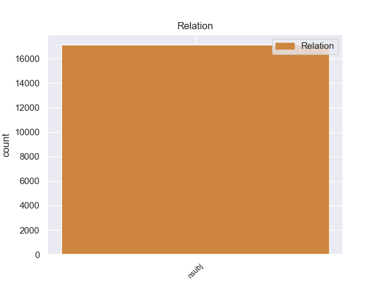
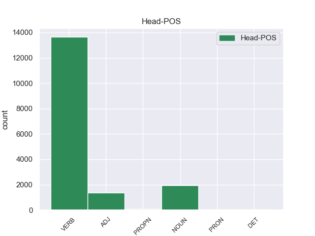
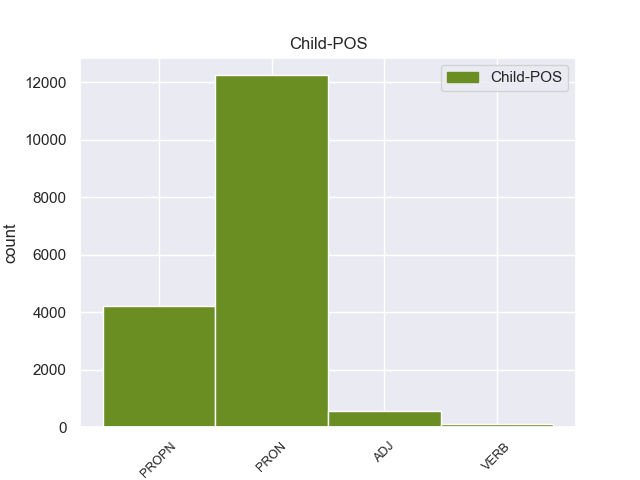

Distribution of features within this leaf



Agreement Rules sorted by frequency.
- When the dependent token is the nominal modifier(nmod) of the head token, and the head token is NOUN and the dependent token is NOUN.
1 Контролируемый _ _ _ _ 0 _ _ _
2 интерфейсом _ _ _ _ 0 _ _ _
3 захвата захват NOUN NN Animacy=Inan|Case=Gen|Gender=Masc|Number=Sing 0 _ _ _
4 движения движение NOUN NN Animacy=Inan|Case=Gen|Gender=Neut|Number=Sing 3 nmod _ SpaceAfter=No
5 , _ _ _ _ 0 _ _ _
6 Geminoid _ _ _ _ 0 _ _ _
7 HI _ _ _ _ 0 _ _ _
8 - _ _ _ _ 0 _ _ _
9 1 _ _ _ _ 0 _ _ _
10 Может _ _ _ _ 0 _ _ _
11 имитировать _ _ _ _ 0 _ _ _
12 тело _ _ _ _ 0 _ _ _
13 Исигуро _ _ _ _ 0 _ _ _
14 и _ _ _ _ 0 _ _ _
15 мимикой _ _ _ _ 0 _ _ _
16 , _ _ _ _ 0 _ _ _
17 и _ _ _ _ 0 _ _ _
18 он _ _ _ _ 0 _ _ _
19 может _ _ _ _ 0 _ _ _
20 воспроизводить _ _ _ _ 0 _ _ _
21 голос _ _ _ _ 0 _ _ _
22 синхронно _ _ _ _ 0 _ _ _
23 с _ _ _ _ 0 _ _ _
24 его _ _ _ _ 0 _ _ _
25 движениями _ _ _ _ 0 _ _ _
26 и _ _ _ _ 0 _ _ _
27 осанку _ _ _ _ 0 _ _ _
28 . _ _ _ _ 0 _ _ _
1 В _ _ _ _ 0 _ _ _
2 те _ _ _ _ 0 _ _ _
3 годы _ _ _ _ 0 _ _ _
4 в _ _ _ _ 0 _ _ _
5 селе село NOUN NN Animacy=Inan|Case=Loc|Gender=Neut|Number=Sing 6 obl _ _
6 был быть VERB VBC Aspect=Imp|Gender=Masc|Mood=Ind|Number=Sing|Tense=Past|VerbForm=Fin|Voice=Act 0 _ _ _
7 птичник _ _ _ _ 0 _ _ _
8 и _ _ _ _ 0 _ _ _
9 разбит _ _ _ _ 0 _ _ _
10 колхозный _ _ _ _ 0 _ _ _
11 сад _ _ _ _ 0 _ _ _
12 . _ _ _ _ 0 _ _ _
1 Контролируемый _ _ _ _ 0 _ _ _
2 интерфейсом _ _ _ _ 0 _ _ _
3 захвата _ _ _ _ 0 _ _ _
4 движения _ _ _ _ 0 _ _ _
5 , _ _ _ _ 0 _ _ _
6 Geminoid _ _ _ _ 0 _ _ _
7 HI _ _ _ _ 0 _ _ _
8 - _ _ _ _ 0 _ _ _
9 1 _ _ _ _ 0 _ _ _
10 Может _ _ _ _ 0 _ _ _
11 имитировать _ _ _ _ 0 _ _ _
12 тело _ _ _ _ 0 _ _ _
13 Исигуро _ _ _ _ 0 _ _ _
14 и _ _ _ _ 0 _ _ _
15 мимикой _ _ _ _ 0 _ _ _
16 , _ _ _ _ 0 _ _ _
17 и _ _ _ _ 0 _ _ _
18 он _ _ _ _ 0 _ _ _
19 может _ _ _ _ 0 _ _ _
20 воспроизводить _ _ _ _ 0 _ _ _
21 голос голос NOUN NN Animacy=Inan|Case=Acc|Gender=Masc|Number=Sing 0 _ _ _
22 синхронно _ _ _ _ 0 _ _ _
23 с _ _ _ _ 0 _ _ _
24 его _ _ _ _ 0 _ _ _
25 движениями _ _ _ _ 0 _ _ _
26 и _ _ _ _ 0 _ _ _
27 осанку осанка NOUN NN Animacy=Inan|Case=Acc|Gender=Fem|Number=Sing 21 conj _ SpaceAfter=No
28 . _ _ _ _ 0 _ _ _
1 `` _ _ _ _ 0 _ _ _
2 Адад _ _ _ _ 0 _ _ _
3 потомство потомство NOUN NN Animacy=Inan|Case=Acc|Gender=Neut|Number=Sing 4 obj _ _
4 храни хранить VERB VBC Aspect=Imp|Mood=Imp|Number=Sing|Person=2|VerbForm=Fin|Voice=Act 0 _ _ _
5 '' _ _ _ _ 0 _ _ _
6 ; _ _ _ _ 0 _ _ _
7 dIM _ _ _ _ 0 _ _ _
8 , _ _ _ _ 0 _ _ _
9 MU _ _ _ _ 0 _ _ _
10 , _ _ _ _ 0 _ _ _
11 ŠEŠ _ _ _ _ 0 _ _ _
12 или _ _ _ _ 0 _ _ _
13 mdIM _ _ _ _ 0 _ _ _
14 , _ _ _ _ 0 _ _ _
15 MU _ _ _ _ 0 _ _ _
16 , _ _ _ _ 0 _ _ _
17 ŠEŠ _ _ _ _ 0 _ _ _
18 ) _ _ _ _ 0 _ _ _
19 -- _ _ _ _ 0 _ _ _
20 касситский _ _ _ _ 0 _ _ _
21 царь _ _ _ _ 0 _ _ _
22 Вавилонии _ _ _ _ 0 _ _ _
23 , _ _ _ _ 0 _ _ _
24 правил _ _ _ _ 0 _ _ _
25 приблизительно _ _ _ _ 0 _ _ _
26 в _ _ _ _ 0 _ _ _
27 1219 _ _ _ _ 0 _ _ _
28 -- _ _ _ _ 0 _ _ _
29 1188 _ _ _ _ 0 _ _ _
30 годах _ _ _ _ 0 _ _ _
31 до _ _ _ _ 0 _ _ _
32 н. _ _ _ _ 0 _ _ _
33 э _ _ _ _ 0 _ _ _
34 . _ _ _ _ 0 _ _ _
1 Эксергия эксергия NOUN NN Animacy=Inan|Case=Nom|Gender=Fem|Number=Sing 0 _ _ _
2 ( _ _ _ _ 0 _ _ _
3 эксэргия эксэргия NOUN NN Animacy=Inan|Case=Nom|Gender=Fem|Number=Sing 1 appos _ SpaceAfter=No
4 ; _ _ _ _ 0 _ _ _
5 от _ _ _ _ 0 _ _ _
6 , _ _ _ _ 0 _ _ _
7 -- _ _ _ _ 0 _ _ _
8 приставка _ _ _ _ 0 _ _ _
9 , _ _ _ _ 0 _ _ _
10 означающая _ _ _ _ 0 _ _ _
11 высокую _ _ _ _ 0 _ _ _
12 степень _ _ _ _ 0 _ _ _
13 , _ _ _ _ 0 _ _ _
14 и _ _ _ _ 0 _ _ _
15 -- _ _ _ _ 0 _ _ _
16 работа _ _ _ _ 0 _ _ _
17 ) _ _ _ _ 0 _ _ _
18 -- _ _ _ _ 0 _ _ _
19 часть _ _ _ _ 0 _ _ _
20 энергии _ _ _ _ 0 _ _ _
21 , _ _ _ _ 0 _ _ _
22 равная _ _ _ _ 0 _ _ _
23 максимальной _ _ _ _ 0 _ _ _
24 полезной _ _ _ _ 0 _ _ _
25 работе _ _ _ _ 0 _ _ _
26 , _ _ _ _ 0 _ _ _
27 которую _ _ _ _ 0 _ _ _
28 может _ _ _ _ 0 _ _ _
29 совершить _ _ _ _ 0 _ _ _
30 термодинамическая _ _ _ _ 0 _ _ _
31 система _ _ _ _ 0 _ _ _
32 при _ _ _ _ 0 _ _ _
33 переходе _ _ _ _ 0 _ _ _
34 из _ _ _ _ 0 _ _ _
35 данного _ _ _ _ 0 _ _ _
36 состояния _ _ _ _ 0 _ _ _
37 в _ _ _ _ 0 _ _ _
38 состояние _ _ _ _ 0 _ _ _
39 равновесия _ _ _ _ 0 _ _ _
40 с _ _ _ _ 0 _ _ _
41 окружающей _ _ _ _ 0 _ _ _
42 средой _ _ _ _ 0 _ _ _
43 . _ _ _ _ 0 _ _ _
1 Основная _ _ _ _ 0 _ _ _
2 аудитория _ _ _ _ 0 _ _ _
3 геосоциального _ _ _ _ 0 _ _ _
4 сервиса _ _ _ _ 0 _ _ _
5 AlterGeo _ _ _ _ 0 _ _ _
6 -- _ _ _ _ 0 _ _ _
7 молодые _ _ _ _ 0 _ _ _
8 общительные _ _ _ _ 0 _ _ _
9 люди _ _ _ _ 0 _ _ _
10 , _ _ _ _ 0 _ _ _
11 которые _ _ _ _ 0 _ _ _
12 активно _ _ _ _ 0 _ _ _
13 пользуются _ _ _ _ 0 _ _ _
14 Интернетом _ _ _ _ 0 _ _ _
15 и _ _ _ _ 0 _ _ _
16 социальными _ _ _ _ 0 _ _ _
17 сетями _ _ _ _ 0 _ _ _
18 , _ _ _ _ 0 _ _ _
19 являются являться VERB VBC Aspect=Imp|Mood=Ind|Number=Plur|Person=3|Tense=Pres|VerbForm=Fin|Voice=Mid 0 _ _ _
20 лидерами лидер NOUN NN Animacy=Anim|Case=Ins|Gender=Masc|Number=Plur 19 xcomp _ _
21 мнений _ _ _ _ 0 _ _ _
22 , _ _ _ _ 0 _ _ _
23 с _ _ _ _ 0 _ _ _
24 уровнем _ _ _ _ 0 _ _ _
25 дохода _ _ _ _ 0 _ _ _
26 выше _ _ _ _ 0 _ _ _
27 среднего _ _ _ _ 0 _ _ _
28 ( _ _ _ _ 0 _ _ _
29 имеют _ _ _ _ 0 _ _ _
30 современный _ _ _ _ 0 _ _ _
31 мобильный _ _ _ _ 0 _ _ _
32 телефон _ _ _ _ 0 _ _ _
33 , _ _ _ _ 0 _ _ _
34 ноутбук _ _ _ _ 0 _ _ _
35 ) _ _ _ _ 0 _ _ _
36 , _ _ _ _ 0 _ _ _
37 живут _ _ _ _ 0 _ _ _
38 в _ _ _ _ 0 _ _ _
39 мегаполисах _ _ _ _ 0 _ _ _
40 , _ _ _ _ 0 _ _ _
41 любят _ _ _ _ 0 _ _ _
42 встречаться _ _ _ _ 0 _ _ _
43 с _ _ _ _ 0 _ _ _
44 друзьями _ _ _ _ 0 _ _ _
45 и _ _ _ _ 0 _ _ _
46 посещать _ _ _ _ 0 _ _ _
47 новые _ _ _ _ 0 _ _ _
48 интересные _ _ _ _ 0 _ _ _
49 места _ _ _ _ 0 _ _ _
50 . _ _ _ _ 0 _ _ _
1 В _ _ _ _ 0 _ _ _
2 этом _ _ _ _ 0 _ _ _
3 же _ _ _ _ 0 _ _ _
4 матче _ _ _ _ 0 _ _ _
5 автором _ _ _ _ 0 _ _ _
6 первого первый ADJ ORD Case=Gen|Degree=Pos|Gender=Masc|Number=Sing 0 _ _ _
7 в _ _ _ _ 0 _ _ _
8 истории история NOUN NN Animacy=Inan|Case=Loc|Gender=Fem|Number=Sing 6 nmod _ _
9 гола _ _ _ _ 0 _ _ _
10 сборной _ _ _ _ 0 _ _ _
11 Украины _ _ _ _ 0 _ _ _
12 стал _ _ _ _ 0 _ _ _
13 другой _ _ _ _ 0 _ _ _
14 игрок _ _ _ _ 0 _ _ _
15 одесского _ _ _ _ 0 _ _ _
16 `` _ _ _ _ 0 _ _ _
17 Черноморца _ _ _ _ 0 _ _ _
18 '' _ _ _ _ 0 _ _ _
19 -- _ _ _ _ 0 _ _ _
20 Иван _ _ _ _ 0 _ _ _
21 Гецко _ _ _ _ 0 _ _ _
22 . _ _ _ _ 0 _ _ _
1 В _ _ _ _ 0 _ _ _
2 звании _ _ _ _ 0 _ _ _
3 поглавника _ _ _ _ 0 _ _ _
4 Павелич _ _ _ _ 0 _ _ _
5 сосредоточил _ _ _ _ 0 _ _ _
6 всю _ _ _ _ 0 _ _ _
7 власть _ _ _ _ 0 _ _ _
8 в _ _ _ _ 0 _ _ _
9 своих _ _ _ _ 0 _ _ _
10 руках _ _ _ _ 0 _ _ _
11 и _ _ _ _ 0 _ _ _
12 способствовал способствовать VERB VBC Aspect=Imp|Gender=Masc|Mood=Ind|Number=Sing|Tense=Past|VerbForm=Fin|Voice=Act 0 _ _ _
13 созданию создание NOUN NN Animacy=Inan|Case=Dat|Gender=Neut|Number=Sing 12 iobj _ _
14 вокруг _ _ _ _ 0 _ _ _
15 себя _ _ _ _ 0 _ _ _
16 культа _ _ _ _ 0 _ _ _
17 личности _ _ _ _ 0 _ _ _
18 . _ _ _ _ 0 _ _ _
1 Контролируемый контролировать VERB VBNL Animacy=Inan|Aspect=Imp|Case=Nom|Gender=Masc|Number=Sing|Tense=Pres|VerbForm=Part|Voice=Pass 0 _ _ _
2 интерфейсом интерфейс NOUN NN Animacy=Inan|Case=Ins|Gender=Masc|Number=Sing 1 obl:agent _ _
3 захвата _ _ _ _ 0 _ _ _
4 движения _ _ _ _ 0 _ _ _
5 , _ _ _ _ 0 _ _ _
6 Geminoid _ _ _ _ 0 _ _ _
7 HI _ _ _ _ 0 _ _ _
8 - _ _ _ _ 0 _ _ _
9 1 _ _ _ _ 0 _ _ _
10 Может _ _ _ _ 0 _ _ _
11 имитировать _ _ _ _ 0 _ _ _
12 тело _ _ _ _ 0 _ _ _
13 Исигуро _ _ _ _ 0 _ _ _
14 и _ _ _ _ 0 _ _ _
15 мимикой _ _ _ _ 0 _ _ _
16 , _ _ _ _ 0 _ _ _
17 и _ _ _ _ 0 _ _ _
18 он _ _ _ _ 0 _ _ _
19 может _ _ _ _ 0 _ _ _
20 воспроизводить _ _ _ _ 0 _ _ _
21 голос _ _ _ _ 0 _ _ _
22 синхронно _ _ _ _ 0 _ _ _
23 с _ _ _ _ 0 _ _ _
24 его _ _ _ _ 0 _ _ _
25 движениями _ _ _ _ 0 _ _ _
26 и _ _ _ _ 0 _ _ _
27 осанку _ _ _ _ 0 _ _ _
28 . _ _ _ _ 0 _ _ _
1 В _ _ _ _ 0 _ _ _
2 1964 _ _ _ _ 0 _ _ _
3 году _ _ _ _ 0 _ _ _
4 состоялся _ _ _ _ 0 _ _ _
5 дебют _ _ _ _ 0 _ _ _
6 Бобби _ _ _ _ 0 _ _ _
7 Джентри _ _ _ _ 0 _ _ _
8 на _ _ _ _ 0 _ _ _
9 виниле _ _ _ _ 0 _ _ _
10 : _ _ _ _ 0 _ _ _
11 сингл _ _ _ _ 0 _ _ _
12 с _ _ _ _ 0 _ _ _
13 песнями _ _ _ _ 0 _ _ _
14 `` _ _ _ _ 0 _ _ _
15 Ode _ _ _ _ 0 _ _ _
16 to _ _ _ _ 0 _ _ _
17 Love _ _ _ _ 0 _ _ _
18 '' _ _ _ _ 0 _ _ _
19 и _ _ _ _ 0 _ _ _
20 `` _ _ _ _ 0 _ _ _
21 Stranger _ _ _ _ 0 _ _ _
22 in _ _ _ _ 0 _ _ _
23 the _ _ _ _ 0 _ _ _
24 Mirror _ _ _ _ 0 _ _ _
25 '' _ _ _ _ 0 _ _ _
26 был _ _ _ _ 0 _ _ _
27 записан _ _ _ _ 0 _ _ _
28 совместно _ _ _ _ 0 _ _ _
29 с _ _ _ _ 0 _ _ _
30 Джоди Джоди PROPN NNP Animacy=Anim|Case=Ins|Gender=Fem|Number=Sing 0 _ _ _
31 Рейнольдс _ _ _ _ 0 _ _ _
32 , _ _ _ _ 0 _ _ _
33 исполнительницей исполнительница NOUN NN Animacy=Anim|Case=Ins|Gender=Fem|Number=Sing 30 appos _ _
34 рокабилли _ _ _ _ 0 _ _ _
35 . _ _ _ _ 0 _ _ _
1 Позиция _ _ _ _ 0 _ _ _
2 РПЦ РПЦ PROPN NNP Animacy=Inan|Case=Gen|Gender=Fem|Number=Sing 0 _ _ _
3 в _ _ _ _ 0 _ _ _
4 отношении отношение NOUN NN Animacy=Inan|Case=Loc|Gender=Neut|Number=Sing 2 nmod _ _
5 инославия _ _ _ _ 0 _ _ _
6 сформулирована _ _ _ _ 0 _ _ _
7 в _ _ _ _ 0 _ _ _
8 документе _ _ _ _ 0 _ _ _
9 `` _ _ _ _ 0 _ _ _
10 Основные _ _ _ _ 0 _ _ _
11 принципы _ _ _ _ 0 _ _ _
12 отношения _ _ _ _ 0 _ _ _
13 Русской _ _ _ _ 0 _ _ _
14 Православной _ _ _ _ 0 _ _ _
15 Церкви _ _ _ _ 0 _ _ _
16 к _ _ _ _ 0 _ _ _
17 инославию _ _ _ _ 0 _ _ _
18 '' _ _ _ _ 0 _ _ _
19 , _ _ _ _ 0 _ _ _
20 принятом _ _ _ _ 0 _ _ _
21 в _ _ _ _ 0 _ _ _
22 2000 _ _ _ _ 0 _ _ _
23 году _ _ _ _ 0 _ _ _
24 на _ _ _ _ 0 _ _ _
25 Архиерейском _ _ _ _ 0 _ _ _
26 Соборе _ _ _ _ 0 _ _ _
27 РПЦ _ _ _ _ 0 _ _ _
28 в _ _ _ _ 0 _ _ _
29 2000 _ _ _ _ 0 _ _ _
30 году _ _ _ _ 0 _ _ _
31 . _ _ _ _ 0 _ _ _
1 Граничит _ _ _ _ 0 _ _ _
2 с _ _ _ _ 0 _ _ _
3 департаментами _ _ _ _ 0 _ _ _
4 : _ _ _ _ 0 _ _ _
5 Санага _ _ _ _ 0 _ _ _
6 - _ _ _ _ 0 _ _ _
7 Маритим _ _ _ _ 0 _ _ _
8 ( _ _ _ _ 0 _ _ _
9 на _ _ _ _ 0 _ _ _
10 севере _ _ _ _ 0 _ _ _
11 и _ _ _ _ 0 _ _ _
12 западе _ _ _ _ 0 _ _ _
13 ) _ _ _ _ 0 _ _ _
14 , _ _ _ _ 0 _ _ _
15 Лекье _ _ _ _ 0 _ _ _
16 ( _ _ _ _ 0 _ _ _
17 на _ _ _ _ 0 _ _ _
18 северо-востоке _ _ _ _ 0 _ _ _
19 и _ _ _ _ 0 _ _ _
20 востоке _ _ _ _ 0 _ _ _
21 ) _ _ _ _ 0 _ _ _
22 , _ _ _ _ 0 _ _ _
23 Мефу _ _ _ _ 0 _ _ _
24 и _ _ _ _ 0 _ _ _
25 Аконо _ _ _ _ 0 _ _ _
26 ( _ _ _ _ 0 _ _ _
27 на _ _ _ _ 0 _ _ _
28 востоке _ _ _ _ 0 _ _ _
29 ) _ _ _ _ 0 _ _ _
30 , _ _ _ _ 0 _ _ _
31 Ньонг _ _ _ _ 0 _ _ _
32 и _ _ _ _ 0 _ _ _
33 Соо _ _ _ _ 0 _ _ _
34 ( _ _ _ _ 0 _ _ _
35 на _ _ _ _ 0 _ _ _
36 юге _ _ _ _ 0 _ _ _
37 ) _ _ _ _ 0 _ _ _
38 и _ _ _ _ 0 _ _ _
39 Океан океан NOUN NN Animacy=Inan|Case=Nom|Gender=Masc|Number=Sing 0 _ _ _
40 ( _ _ _ _ 0 _ _ _
41 на _ _ _ _ 0 _ _ _
42 юге юг NOUN NN Animacy=Inan|Case=Loc|Gender=Masc|Number=Sing 39 parataxis _ _
43 и _ _ _ _ 0 _ _ _
44 юго-западе _ _ _ _ 0 _ _ _
45 ) _ _ _ _ 0 _ _ _
46 . _ _ _ _ 0 _ _ _
1 Салакка _ _ _ _ 0 _ _ _
2 ( _ _ _ _ 0 _ _ _
3 ) _ _ _ _ 0 _ _ _
4 -- _ _ _ _ 0 _ _ _
5 род _ _ _ _ 0 _ _ _
6 растений _ _ _ _ 0 _ _ _
7 семейства _ _ _ _ 0 _ _ _
8 , _ _ _ _ 0 _ _ _
9 в _ _ _ _ 0 _ _ _
10 состав _ _ _ _ 0 _ _ _
11 которого _ _ _ _ 0 _ _ _
12 входит _ _ _ _ 0 _ _ _
13 около _ _ _ _ 0 _ _ _
14 20 _ _ _ _ 0 _ _ _
15 видов _ _ _ _ 0 _ _ _
16 , _ _ _ _ 0 _ _ _
17 произрастающих _ _ _ _ 0 _ _ _
18 в _ _ _ _ 0 _ _ _
19 Индонезии Индонезия PROPN NNP Animacy=Inan|Case=Loc|Gender=Fem|Number=Sing 0 _ _ _
20 , _ _ _ _ 0 _ _ _
21 Малайзии _ _ _ _ 0 _ _ _
22 , _ _ _ _ 0 _ _ _
23 Мьянма _ _ _ _ 0 _ _ _
24 , _ _ _ _ 0 _ _ _
25 Таиланде _ _ _ _ 0 _ _ _
26 , _ _ _ _ 0 _ _ _
27 Китае _ _ _ _ 0 _ _ _
28 , _ _ _ _ 0 _ _ _
29 на _ _ _ _ 0 _ _ _
30 Филлипинах _ _ _ _ 0 _ _ _
31 , _ _ _ _ 0 _ _ _
32 в _ _ _ _ 0 _ _ _
33 северо-восточной _ _ _ _ 0 _ _ _
34 части часть NOUN NN Animacy=Inan|Case=Loc|Gender=Fem|Number=Sing 19 conj _ _
35 Индии _ _ _ _ 0 _ _ _
36 . _ _ _ _ 0 _ _ _
1 К _ _ _ _ 0 _ _ _
2 северо-западу _ _ _ _ 0 _ _ _
3 от _ _ _ _ 0 _ _ _
4 Хайчэна _ _ _ _ 0 _ _ _
5 находится находиться VERB VBC Aspect=Imp|Mood=Ind|Number=Sing|Person=3|Tense=Pres|VerbForm=Fin|Voice=Mid 0 _ _ _
6 уезд _ _ _ _ 0 _ _ _
7 Тайань _ _ _ _ 0 _ _ _
8 , _ _ _ _ 0 _ _ _
9 к _ _ _ _ 0 _ _ _
10 северо-востоку _ _ _ _ 0 _ _ _
11 -- _ _ _ _ 0 _ _ _
12 район _ _ _ _ 0 _ _ _
13 Цяньшань _ _ _ _ 0 _ _ _
14 , _ _ _ _ 0 _ _ _
15 к _ _ _ _ 0 _ _ _
16 юго-востоку _ _ _ _ 0 _ _ _
17 -- _ _ _ _ 0 _ _ _
18 Сюянь-Маньчжурский _ _ _ _ 0 _ _ _
19 автономный _ _ _ _ 0 _ _ _
20 уезд уезд NOUN NN Animacy=Inan|Case=Nom|Gender=Masc|Number=Sing 5 conj _ orig_deprel=nsubj|SpaceAfter=No
21 . _ _ _ _ 0 _ _ _
1 С _ _ _ _ 0 _ _ _
2 третьего _ _ _ _ 0 _ _ _
3 класса _ _ _ _ 0 _ _ _
4 Меган _ _ _ _ 0 _ _ _
5 ходила ходить VERB VBC Aspect=Imp|Gender=Fem|Mood=Ind|Number=Sing|Tense=Past|VerbForm=Fin|Voice=Act 0 _ _ _
6 к _ _ _ _ 0 _ _ _
7 психиатру _ _ _ _ 0 _ _ _
8 ; _ _ _ _ 0 _ _ _
9 диагноз _ _ _ _ 0 _ _ _
10 -- _ _ _ _ 0 _ _ _
11 большое _ _ _ _ 0 _ _ _
12 депрессивное _ _ _ _ 0 _ _ _
13 расстройство расстройство NOUN NN Animacy=Inan|Case=Nom|Gender=Neut|Number=Sing 5 parataxis _ _
14 и _ _ _ _ 0 _ _ _
15 СДВГ _ _ _ _ 0 _ _ _
16 . _ _ _ _ 0 _ _ _
1 Важной _ _ _ _ 0 _ _ _
2 вехой _ _ _ _ 0 _ _ _
3 становится _ _ _ _ 0 _ _ _
4 год _ _ _ _ 0 _ _ _
5 2004 _ _ _ _ 0 _ _ _
6 , _ _ _ _ 0 _ _ _
7 когда _ _ _ _ 0 _ _ _
8 в _ _ _ _ 0 _ _ _
9 России _ _ _ _ 0 _ _ _
10 зарождается _ _ _ _ 0 _ _ _
11 фактически _ _ _ _ 0 _ _ _
12 вторая второй ADJ ORD Case=Nom|Degree=Pos|Gender=Fem|Number=Sing 0 _ _ _
13 по _ _ _ _ 0 _ _ _
14 значимости значимость NOUN NN Animacy=Inan|Case=Dat|Gender=Fem|Number=Sing 12 obl _ _
15 после _ _ _ _ 0 _ _ _
16 московской _ _ _ _ 0 _ _ _
17 сцена _ _ _ _ 0 _ _ _
18 , _ _ _ _ 0 _ _ _
19 а _ _ _ _ 0 _ _ _
20 именно _ _ _ _ 0 _ _ _
21 кировская _ _ _ _ 0 _ _ _
22 стрит-панк _ _ _ _ 0 _ _ _
23 сцена _ _ _ _ 0 _ _ _
24 . _ _ _ _ 0 _ _ _
1 К _ _ _ _ 0 _ _ _
2 северо-западу _ _ _ _ 0 _ _ _
3 от _ _ _ _ 0 _ _ _
4 Хайчэна _ _ _ _ 0 _ _ _
5 находится _ _ _ _ 0 _ _ _
6 уезд _ _ _ _ 0 _ _ _
7 Тайань _ _ _ _ 0 _ _ _
8 , _ _ _ _ 0 _ _ _
9 к _ _ _ _ 0 _ _ _
10 северо-востоку _ _ _ _ 0 _ _ _
11 -- _ _ _ _ 0 _ _ _
12 район _ _ _ _ 0 _ _ _
13 Цяньшань _ _ _ _ 0 _ _ _
14 , _ _ _ _ 0 _ _ _
15 к _ _ _ _ 0 _ _ _
16 юго-востоку юго-восток NOUN NN Animacy=Inan|Case=Dat|Gender=Masc|Number=Sing 20 orphan _ _
17 -- _ _ _ _ 0 _ _ _
18 Сюянь-Маньчжурский _ _ _ _ 0 _ _ _
19 автономный _ _ _ _ 0 _ _ _
20 уезд уезд NOUN NN Animacy=Inan|Case=Nom|Gender=Masc|Number=Sing 0 _ _ _
21 . _ _ _ _ 0 _ _ _
1 Виновные _ _ _ _ 0 _ _ _
2 были _ _ _ _ 0 _ _ _
3 приговорены _ _ _ _ 0 _ _ _
4 к _ _ _ _ 0 _ _ _
5 штрафу _ _ _ _ 0 _ _ _
6 в _ _ _ _ 0 _ _ _
7 размере _ _ _ _ 0 _ _ _
8 19,25 _ _ _ _ 0 _ _ _
9 млн миллион NOUN NN Animacy=Inan|Case=Gen|Gender=Masc|Number=Plur 10 nummod:gov _ _
10 долларов доллар NOUN NN Animacy=Inan|Case=Gen|Gender=Masc|Number=Plur 0 _ _ _
1 Эксергия _ _ _ _ 0 _ _ _
2 ( _ _ _ _ 0 _ _ _
3 эксэргия _ _ _ _ 0 _ _ _
4 ; _ _ _ _ 0 _ _ _
5 от _ _ _ _ 0 _ _ _
6 , _ _ _ _ 0 _ _ _
7 -- _ _ _ _ 0 _ _ _
8 приставка _ _ _ _ 0 _ _ _
9 , _ _ _ _ 0 _ _ _
10 означающая _ _ _ _ 0 _ _ _
11 высокую _ _ _ _ 0 _ _ _
12 степень _ _ _ _ 0 _ _ _
13 , _ _ _ _ 0 _ _ _
14 и _ _ _ _ 0 _ _ _
15 -- _ _ _ _ 0 _ _ _
16 работа _ _ _ _ 0 _ _ _
17 ) _ _ _ _ 0 _ _ _
18 -- _ _ _ _ 0 _ _ _
19 часть _ _ _ _ 0 _ _ _
20 энергии _ _ _ _ 0 _ _ _
21 , _ _ _ _ 0 _ _ _
22 равная равный ADJ JJL Case=Nom|Degree=Pos|Gender=Fem|Number=Sing 0 _ _ _
23 максимальной _ _ _ _ 0 _ _ _
24 полезной _ _ _ _ 0 _ _ _
25 работе работа NOUN NN Animacy=Inan|Case=Dat|Gender=Fem|Number=Sing 22 iobj _ SpaceAfter=No
26 , _ _ _ _ 0 _ _ _
27 которую _ _ _ _ 0 _ _ _
28 может _ _ _ _ 0 _ _ _
29 совершить _ _ _ _ 0 _ _ _
30 термодинамическая _ _ _ _ 0 _ _ _
31 система _ _ _ _ 0 _ _ _
32 при _ _ _ _ 0 _ _ _
33 переходе _ _ _ _ 0 _ _ _
34 из _ _ _ _ 0 _ _ _
35 данного _ _ _ _ 0 _ _ _
36 состояния _ _ _ _ 0 _ _ _
37 в _ _ _ _ 0 _ _ _
38 состояние _ _ _ _ 0 _ _ _
39 равновесия _ _ _ _ 0 _ _ _
40 с _ _ _ _ 0 _ _ _
41 окружающей _ _ _ _ 0 _ _ _
42 средой _ _ _ _ 0 _ _ _
43 . _ _ _ _ 0 _ _ _
1 Старший _ _ _ _ 0 _ _ _
2 из _ _ _ _ 0 _ _ _
3 пяти _ _ _ _ 0 _ _ _
4 детей _ _ _ _ 0 _ _ _
5 , _ _ _ _ 0 _ _ _
6 Тимоти _ _ _ _ 0 _ _ _
7 Долан _ _ _ _ 0 _ _ _
8 родился _ _ _ _ 0 _ _ _
9 в _ _ _ _ 0 _ _ _
10 Сент-Луисе Сент-Луис PROPN NNP Animacy=Inan|Case=Loc|Gender=Masc|Number=Sing 0 _ _ _
11 , _ _ _ _ 0 _ _ _
12 штат штат NOUN NN Animacy=Inan|Case=Nom|Gender=Masc|Number=Sing 10 list _ _
13 Миссури _ _ _ _ 0 _ _ _
14 , _ _ _ _ 0 _ _ _
15 6 _ _ _ _ 0 _ _ _
16 февраля _ _ _ _ 0 _ _ _
17 1950 _ _ _ _ 0 _ _ _
18 года _ _ _ _ 0 _ _ _
19 и _ _ _ _ 0 _ _ _
20 был _ _ _ _ 0 _ _ _
21 сыном _ _ _ _ 0 _ _ _
22 Роберта _ _ _ _ 0 _ _ _
23 ( _ _ _ _ 0 _ _ _
24 умер _ _ _ _ 0 _ _ _
25 в _ _ _ _ 0 _ _ _
26 1977 _ _ _ _ 0 _ _ _
27 году _ _ _ _ 0 _ _ _
28 ) _ _ _ _ 0 _ _ _
29 и _ _ _ _ 0 _ _ _
30 Ширли _ _ _ _ 0 _ _ _
31 ( _ _ _ _ 0 _ _ _
32 урожденной _ _ _ _ 0 _ _ _
33 Рэдклифф _ _ _ _ 0 _ _ _
34 ) _ _ _ _ 0 _ _ _
35 Долан _ _ _ _ 0 _ _ _
36 . _ _ _ _ 0 _ _ _
1 Будучи _ _ _ _ 0 _ _ _
2 сапёром _ _ _ _ 0 _ _ _
3 335-го _ _ _ _ 0 _ _ _
4 отдельного _ _ _ _ 0 _ _ _
5 сапёрного _ _ _ _ 0 _ _ _
6 батальона _ _ _ _ 0 _ _ _
7 ( _ _ _ _ 0 _ _ _
8 199-я _ _ _ _ 0 _ _ _
9 стрелковая _ _ _ _ 0 _ _ _
10 дивизия дивизия NOUN NN Animacy=Inan|Case=Nom|Gender=Fem|Number=Sing 0 _ _ _
11 33-я _ _ _ _ 0 _ _ _
12 армия _ _ _ _ 0 _ _ _
13 Западный _ _ _ _ 0 _ _ _
14 фронт фронт NOUN NN Animacy=Inan|Case=Nom|Gender=Masc|Number=Sing 10 list _ SpaceAfter=No
15 ) _ _ _ _ 0 _ _ _
16 , _ _ _ _ 0 _ _ _
17 снял _ _ _ _ 0 _ _ _
18 18 _ _ _ _ 0 _ _ _
19 мин _ _ _ _ 0 _ _ _
20 южнее _ _ _ _ 0 _ _ _
21 Витебска _ _ _ _ 0 _ _ _
22 и _ _ _ _ 0 _ _ _
23 провёл _ _ _ _ 0 _ _ _
24 танки _ _ _ _ 0 _ _ _
25 через _ _ _ _ 0 _ _ _
26 минное _ _ _ _ 0 _ _ _
27 поле _ _ _ _ 0 _ _ _
28 . _ _ _ _ 0 _ _ _
1 Важной _ _ _ _ 0 _ _ _
2 вехой _ _ _ _ 0 _ _ _
3 становится _ _ _ _ 0 _ _ _
4 год _ _ _ _ 0 _ _ _
5 2004 _ _ _ _ 0 _ _ _
6 , _ _ _ _ 0 _ _ _
7 когда _ _ _ _ 0 _ _ _
8 в _ _ _ _ 0 _ _ _
9 России _ _ _ _ 0 _ _ _
10 зарождается _ _ _ _ 0 _ _ _
11 фактически _ _ _ _ 0 _ _ _
12 вторая _ _ _ _ 0 _ _ _
13 по _ _ _ _ 0 _ _ _
14 значимости _ _ _ _ 0 _ _ _
15 после _ _ _ _ 0 _ _ _
16 московской _ _ _ _ 0 _ _ _
17 сцена _ _ _ _ 0 _ _ _
18 , _ _ _ _ 0 _ _ _
19 а _ _ _ _ 0 _ _ _
20 именно _ _ _ _ 0 _ _ _
21 кировская _ _ _ _ 0 _ _ _
22 стрит-панк стрит-панк NOUN NN Animacy=Inan|Case=Nom|Gender=Masc|Number=Sing 23 compound _ _
23 сцена сцена NOUN NN Animacy=Inan|Case=Nom|Gender=Fem|Number=Sing 0 _ _ _
24 . _ _ _ _ 0 _ _ _
1 Самвел _ _ _ _ 0 _ _ _
2 идёт _ _ _ _ 0 _ _ _
3 к _ _ _ _ 0 _ _ _
4 своему _ _ _ _ 0 _ _ _
5 двоюродному _ _ _ _ 0 _ _ _
6 брату _ _ _ _ 0 _ _ _
7 Мушегу _ _ _ _ 0 _ _ _
8 , _ _ _ _ 0 _ _ _
9 сыну _ _ _ _ 0 _ _ _
10 покойного _ _ _ _ 0 _ _ _
11 Васака _ _ _ _ 0 _ _ _
12 , _ _ _ _ 0 _ _ _
13 и _ _ _ _ 0 _ _ _
14 сообщает _ _ _ _ 0 _ _ _
15 ему _ _ _ _ 0 _ _ _
16 новость _ _ _ _ 0 _ _ _
17 , _ _ _ _ 0 _ _ _
18 но _ _ _ _ 0 _ _ _
19 не _ _ _ _ 0 _ _ _
20 говорит _ _ _ _ 0 _ _ _
21 , _ _ _ _ 0 _ _ _
22 что _ _ _ _ 0 _ _ _
23 его _ _ _ _ 0 _ _ _
24 отец _ _ _ _ 0 _ _ _
25 мертв мертвый ADJ JJH Case=Nom|Degree=Pos|Gender=Masc|Number=Sing|Variant=Short 0 _ _ _
26 , _ _ _ _ 0 _ _ _
27 а _ _ _ _ 0 _ _ _
28 что _ _ _ _ 0 _ _ _
29 он _ _ _ _ 0 _ _ _
30 в _ _ _ _ 0 _ _ _
31 плену плен NOUN NN Animacy=Inan|Case=Loc|Gender=Masc|Number=Sing 25 conj _ _
32 вместе _ _ _ _ 0 _ _ _
33 с _ _ _ _ 0 _ _ _
34 царем _ _ _ _ 0 _ _ _
35 . _ _ _ _ 0 _ _ _
1 В _ _ _ _ 0 _ _ _
2 1857 _ _ _ _ 0 _ _ _
3 году год NOUN NN Animacy=Inan|Case=Loc|Gender=Masc|Number=Sing 6 obl _ _
4 был _ _ _ _ 0 _ _ _
5 в _ _ _ _ 0 _ _ _
6 составе состав NOUN NN Animacy=Inan|Case=Loc|Gender=Masc|Number=Sing 0 _ _ _
7 Кумыкского _ _ _ _ 0 _ _ _
8 отряда _ _ _ _ 0 _ _ _
9 и _ _ _ _ 0 _ _ _
10 принимал _ _ _ _ 0 _ _ _
11 особенно _ _ _ _ 0 _ _ _
12 деятельное _ _ _ _ 0 _ _ _
13 участие _ _ _ _ 0 _ _ _
14 в _ _ _ _ 0 _ _ _
15 борьбе _ _ _ _ 0 _ _ _
16 с _ _ _ _ 0 _ _ _
17 горцами _ _ _ _ 0 _ _ _
18 : _ _ _ _ 0 _ _ _
19 19 _ _ _ _ 0 _ _ _
20 января _ _ _ _ 0 _ _ _
21 был _ _ _ _ 0 _ _ _
22 при _ _ _ _ 0 _ _ _
23 взятии _ _ _ _ 0 _ _ _
24 с _ _ _ _ 0 _ _ _
25 боя _ _ _ _ 0 _ _ _
26 аула _ _ _ _ 0 _ _ _
27 Али _ _ _ _ 0 _ _ _
28 - _ _ _ _ 0 _ _ _
29 Султан _ _ _ _ 0 _ _ _
30 - _ _ _ _ 0 _ _ _
31 Кале _ _ _ _ 0 _ _ _
32 , _ _ _ _ 0 _ _ _
33 19 _ _ _ _ 0 _ _ _
34 марта _ _ _ _ 0 _ _ _
35 -- _ _ _ _ 0 _ _ _
36 при _ _ _ _ 0 _ _ _
37 штурме _ _ _ _ 0 _ _ _
38 и _ _ _ _ 0 _ _ _
39 занятии _ _ _ _ 0 _ _ _
40 укрепленной _ _ _ _ 0 _ _ _
41 позиции _ _ _ _ 0 _ _ _
42 Гойтемир _ _ _ _ 0 _ _ _
43 - _ _ _ _ 0 _ _ _
44 Капу _ _ _ _ 0 _ _ _
45 , _ _ _ _ 0 _ _ _
46 21 _ _ _ _ 0 _ _ _
47 марта _ _ _ _ 0 _ _ _
48 -- _ _ _ _ 0 _ _ _
49 при _ _ _ _ 0 _ _ _
50 уничтожении _ _ _ _ 0 _ _ _
51 аула _ _ _ _ 0 _ _ _
52 Самго _ _ _ _ 0 _ _ _
53 - _ _ _ _ 0 _ _ _
54 Юрта _ _ _ _ 0 _ _ _
55 , _ _ _ _ 0 _ _ _
56 24 _ _ _ _ 0 _ _ _
57 марта _ _ _ _ 0 _ _ _
58 -- _ _ _ _ 0 _ _ _
59 при _ _ _ _ 0 _ _ _
60 взятии _ _ _ _ 0 _ _ _
61 аулов _ _ _ _ 0 _ _ _
62 Машеил _ _ _ _ 0 _ _ _
63 и _ _ _ _ 0 _ _ _
64 Бельноши _ _ _ _ 0 _ _ _
65 ; _ _ _ _ 0 _ _ _
66 за _ _ _ _ 0 _ _ _
67 отличие _ _ _ _ 0 _ _ _
68 в _ _ _ _ 0 _ _ _
69 этих _ _ _ _ 0 _ _ _
70 делах _ _ _ _ 0 _ _ _
71 награждён _ _ _ _ 0 _ _ _
72 золотой _ _ _ _ 0 _ _ _
73 драгунской _ _ _ _ 0 _ _ _
74 саблей _ _ _ _ 0 _ _ _
75 с _ _ _ _ 0 _ _ _
76 надписью _ _ _ _ 0 _ _ _
77 `` _ _ _ _ 0 _ _ _
78 За _ _ _ _ 0 _ _ _
79 храбрость _ _ _ _ 0 _ _ _
80 '' _ _ _ _ 0 _ _ _
81 . _ _ _ _ 0 _ _ _
1 Причина _ _ _ _ 0 _ _ _
2 заключается _ _ _ _ 0 _ _ _
3 в _ _ _ _ 0 _ _ _
4 том _ _ _ _ 0 _ _ _
5 , _ _ _ _ 0 _ _ _
6 что _ _ _ _ 0 _ _ _
7 пользователи _ _ _ _ 0 _ _ _
8 могут _ _ _ _ 0 _ _ _
9 оценить _ _ _ _ 0 _ _ _
10 надёжность _ _ _ _ 0 _ _ _
11 сервис-провайдера _ _ _ _ 0 _ _ _
12 за _ _ _ _ 0 _ _ _
13 пределами _ _ _ _ 0 _ _ _
14 Интернета _ _ _ _ 0 _ _ _
15 ( _ _ _ _ 0 _ _ _
16 напр. _ _ _ _ 0 _ _ _
17 , _ _ _ _ 0 _ _ _
18 был _ _ _ _ 0 _ _ _
19 ли _ _ _ _ 0 _ _ _
20 доставлен _ _ _ _ 0 _ _ _
21 товар _ _ _ _ 0 _ _ _
22 , _ _ _ _ 0 _ _ _
23 вовремя _ _ _ _ 0 _ _ _
24 ли _ _ _ _ 0 _ _ _
25 , _ _ _ _ 0 _ _ _
26 соответствовал _ _ _ _ 0 _ _ _
27 ли _ _ _ _ 0 _ _ _
28 он _ _ _ _ 0 _ _ _
29 заказу _ _ _ _ 0 _ _ _
30 и _ _ _ _ 0 _ _ _
31 т. то PRON DT Animacy=Inan|Case=Dat|Gender=Neut|Number=Sing 0 _ _ _
32 п. подобное NOUN NN Animacy=Inan|Case=Acc|Gender=Neut|Number=Sing 31 fixed _ SpaceAfter=No
33 ) _ _ _ _ 0 _ _ _
1 Научное _ _ _ _ 0 _ _ _
2 и _ _ _ _ 0 _ _ _
3 русское _ _ _ _ 0 _ _ _
4 название _ _ _ _ 0 _ _ _
5 происходят _ _ _ _ 0 _ _ _
6 от _ _ _ _ 0 _ _ _
7 красноватой _ _ _ _ 0 _ _ _
8 окраски _ _ _ _ 0 _ _ _
9 эилок _ _ _ _ 0 _ _ _
10 листьев _ _ _ _ 0 _ _ _
11 этого _ _ _ _ 0 _ _ _
12 клёна _ _ _ _ 0 _ _ _
13 , _ _ _ _ 0 _ _ _
14 а _ _ _ _ 0 _ _ _
15 японское японский ADJ JJL Case=Nom|Degree=Pos|Gender=Neut|Number=Sing 0 _ _ _
16 -- _ _ _ _ 0 _ _ _
17 от _ _ _ _ 0 _ _ _
18 рисунка рисунок NOUN NN Animacy=Inan|Case=Gen|Gender=Masc|Number=Sing 15 orphan _ _
19 коры _ _ _ _ 0 _ _ _
20 . _ _ _ _ 0 _ _ _
1 Усмань _ _ _ _ 0 _ _ _
2 являлась _ _ _ _ 0 _ _ _
3 центром _ _ _ _ 0 _ _ _
4 хлебной _ _ _ _ 0 _ _ _
5 торговли _ _ _ _ 0 _ _ _
6 , _ _ _ _ 0 _ _ _
7 что _ _ _ _ 0 _ _ _
8 и _ _ _ _ 0 _ _ _
9 послужило _ _ _ _ 0 _ _ _
10 мотивом _ _ _ _ 0 _ _ _
11 для _ _ _ _ 0 _ _ _
12 составления составление NOUN NN Animacy=Inan|Case=Gen|Gender=Neut|Number=Sing 0 _ _ _
13 флага _ _ _ _ 0 _ _ _
14 городу город NOUN NN Animacy=Inan|Case=Dat|Gender=Masc|Number=Sing 12 iobj _ SpaceAfter=No
15 . _ _ _ _ 0 _ _ _
1 Она _ _ _ _ 0 _ _ _
2 не _ _ _ _ 0 _ _ _
3 знала знать VERB VBC Aspect=Imp|Gender=Fem|Mood=Ind|Number=Sing|Tense=Past|VerbForm=Fin|Voice=Act 0 _ _ _
4 , _ _ _ _ 0 _ _ _
5 что _ _ _ _ 0 _ _ _
6 такое _ _ _ _ 0 _ _ _
7 наука наука NOUN NN Animacy=Inan|Case=Nom|Gender=Fem|Number=Sing 3 ccomp _ _
8 и _ _ _ _ 0 _ _ _
9 научное _ _ _ _ 0 _ _ _
10 образование _ _ _ _ 0 _ _ _
11 , _ _ _ _ 0 _ _ _
12 она _ _ _ _ 0 _ _ _
13 даже _ _ _ _ 0 _ _ _
14 совсем _ _ _ _ 0 _ _ _
15 не _ _ _ _ 0 _ _ _
16 имела _ _ _ _ 0 _ _ _
17 у _ _ _ _ 0 _ _ _
18 себя _ _ _ _ 0 _ _ _
19 школы _ _ _ _ 0 _ _ _
20 и _ _ _ _ 0 _ _ _
21 лиц _ _ _ _ 0 _ _ _
22 , _ _ _ _ 0 _ _ _
23 получивших _ _ _ _ 0 _ _ _
24 правильное _ _ _ _ 0 _ _ _
25 научное _ _ _ _ 0 _ _ _
26 образование _ _ _ _ 0 _ _ _
27 ; _ _ _ _ 0 _ _ _
28 весь _ _ _ _ 0 _ _ _
29 её _ _ _ _ 0 _ _ _
30 образовательный _ _ _ _ 0 _ _ _
31 капитал _ _ _ _ 0 _ _ _
32 заключался _ _ _ _ 0 _ _ _
33 в _ _ _ _ 0 _ _ _
34 том _ _ _ _ 0 _ _ _
35 , _ _ _ _ 0 _ _ _
36 с _ _ _ _ 0 _ _ _
37 научной _ _ _ _ 0 _ _ _
38 точки _ _ _ _ 0 _ _ _
39 зрения _ _ _ _ 0 _ _ _
40 , _ _ _ _ 0 _ _ _
41 не _ _ _ _ 0 _ _ _
42 особенно _ _ _ _ 0 _ _ _
43 богатом _ _ _ _ 0 _ _ _
44 и _ _ _ _ 0 _ _ _
45 разнообразном _ _ _ _ 0 _ _ _
46 наследстве _ _ _ _ 0 _ _ _
47 , _ _ _ _ 0 _ _ _
48 которое _ _ _ _ 0 _ _ _
49 в _ _ _ _ 0 _ _ _
50 разное _ _ _ _ 0 _ _ _
51 время _ _ _ _ 0 _ _ _
52 русские _ _ _ _ 0 _ _ _
53 посредственно _ _ _ _ 0 _ _ _
54 или _ _ _ _ 0 _ _ _
55 непосредственно _ _ _ _ 0 _ _ _
56 получали _ _ _ _ 0 _ _ _
57 от _ _ _ _ 0 _ _ _
58 греков _ _ _ _ 0 _ _ _
59 , _ _ _ _ 0 _ _ _
60 не _ _ _ _ 0 _ _ _
61 прибавив _ _ _ _ 0 _ _ _
62 к _ _ _ _ 0 _ _ _
63 нему _ _ _ _ 0 _ _ _
64 с _ _ _ _ 0 _ _ _
65 своей _ _ _ _ 0 _ _ _
66 стороны _ _ _ _ 0 _ _ _
67 почти _ _ _ _ 0 _ _ _
68 ровно _ _ _ _ 0 _ _ _
69 ничего _ _ _ _ 0 _ _ _
70 . _ _ _ _ 0 _ _ _
1 Лексикализация _ _ _ _ 0 _ _ _
2 является _ _ _ _ 0 _ _ _
3 механизмом _ _ _ _ 0 _ _ _
4 пополнения _ _ _ _ 0 _ _ _
5 как _ _ _ _ 0 _ _ _
6 общеупотребительной _ _ _ _ 0 _ _ _
7 , _ _ _ _ 0 _ _ _
8 так _ _ _ _ 0 _ _ _
9 и _ _ _ _ 0 _ _ _
10 специальной _ _ _ _ 0 _ _ _
11 и _ _ _ _ 0 _ _ _
12 терминологической _ _ _ _ 0 _ _ _
13 лексики _ _ _ _ 0 _ _ _
14 , _ _ _ _ 0 _ _ _
15 в _ _ _ _ 0 _ _ _
16 результате _ _ _ _ 0 _ _ _
17 которой _ _ _ _ 0 _ _ _
18 лексикализованные _ _ _ _ 0 _ _ _
19 сочетания _ _ _ _ 0 _ _ _
20 в _ _ _ _ 0 _ _ _
21 конечном _ _ _ _ 0 _ _ _
22 итоге _ _ _ _ 0 _ _ _
23 входят _ _ _ _ 0 _ _ _
24 в _ _ _ _ 0 _ _ _
25 языковую _ _ _ _ 0 _ _ _
26 норму _ _ _ _ 0 _ _ _
27 ; _ _ _ _ 0 _ _ _
28 при _ _ _ _ 0 _ _ _
29 этом _ _ _ _ 0 _ _ _
30 в _ _ _ _ 0 _ _ _
31 случае _ _ _ _ 0 _ _ _
32 пополнения _ _ _ _ 0 _ _ _
33 общеупотребительной _ _ _ _ 0 _ _ _
34 лексики _ _ _ _ 0 _ _ _
35 преобладает _ _ _ _ 0 _ _ _
36 дескриптивное _ _ _ _ 0 _ _ _
37 ( _ _ _ _ 0 _ _ _
38 описательное _ _ _ _ 0 _ _ _
39 ) _ _ _ _ 0 _ _ _
40 установление установление NOUN NN Animacy=Inan|Case=Nom|Gender=Neut|Number=Sing 0 _ _ _
41 нормы _ _ _ _ 0 _ _ _
42 фиксацией фиксация NOUN NN Animacy=Inan|Case=Ins|Gender=Fem|Number=Sing 40 obl:agent _ _
43 узуальных _ _ _ _ 0 _ _ _
44 употреблений _ _ _ _ 0 _ _ _
45 лексикализированных _ _ _ _ 0 _ _ _
46 сочетаний _ _ _ _ 0 _ _ _
47 во _ _ _ _ 0 _ _ _
48 фразеологических _ _ _ _ 0 _ _ _
49 словарях _ _ _ _ 0 _ _ _
50 , _ _ _ _ 0 _ _ _
51 а _ _ _ _ 0 _ _ _
52 при _ _ _ _ 0 _ _ _
53 пополнении _ _ _ _ 0 _ _ _
54 терминологий _ _ _ _ 0 _ _ _
55 , _ _ _ _ 0 _ _ _
56 прескриптивная _ _ _ _ 0 _ _ _
57 ( _ _ _ _ 0 _ _ _
58 предписывающая _ _ _ _ 0 _ _ _
59 ) _ _ _ _ 0 _ _ _
60 кодификация _ _ _ _ 0 _ _ _
61 терминологическими _ _ _ _ 0 _ _ _
62 комиссиями _ _ _ _ 0 _ _ _
63 в _ _ _ _ 0 _ _ _
64 терминологических _ _ _ _ 0 _ _ _
65 сборниках _ _ _ _ 0 _ _ _
66 . _ _ _ _ 0 _ _ _
1 Граничит _ _ _ _ 0 _ _ _
2 с _ _ _ _ 0 _ _ _
3 департаментами _ _ _ _ 0 _ _ _
4 : _ _ _ _ 0 _ _ _
5 Санага _ _ _ _ 0 _ _ _
6 - _ _ _ _ 0 _ _ _
7 Маритим _ _ _ _ 0 _ _ _
8 ( _ _ _ _ 0 _ _ _
9 на _ _ _ _ 0 _ _ _
10 севере _ _ _ _ 0 _ _ _
11 и _ _ _ _ 0 _ _ _
12 западе _ _ _ _ 0 _ _ _
13 ) _ _ _ _ 0 _ _ _
14 , _ _ _ _ 0 _ _ _
15 Лекье _ _ _ _ 0 _ _ _
16 ( _ _ _ _ 0 _ _ _
17 на _ _ _ _ 0 _ _ _
18 северо-востоке _ _ _ _ 0 _ _ _
19 и _ _ _ _ 0 _ _ _
20 востоке _ _ _ _ 0 _ _ _
21 ) _ _ _ _ 0 _ _ _
22 , _ _ _ _ 0 _ _ _
23 Мефу _ _ _ _ 0 _ _ _
24 и _ _ _ _ 0 _ _ _
25 Аконо _ _ _ _ 0 _ _ _
26 ( _ _ _ _ 0 _ _ _
27 на _ _ _ _ 0 _ _ _
28 востоке _ _ _ _ 0 _ _ _
29 ) _ _ _ _ 0 _ _ _
30 , _ _ _ _ 0 _ _ _
31 Ньонг Ньонг PROPN NNP Animacy=Inan|Case=Nom|Gender=Masc|Number=Sing 0 _ _ _
32 и _ _ _ _ 0 _ _ _
33 Соо _ _ _ _ 0 _ _ _
34 ( _ _ _ _ 0 _ _ _
35 на _ _ _ _ 0 _ _ _
36 юге юг NOUN NN Animacy=Inan|Case=Loc|Gender=Masc|Number=Sing 31 parataxis _ SpaceAfter=No
37 ) _ _ _ _ 0 _ _ _
38 и _ _ _ _ 0 _ _ _
39 Океан _ _ _ _ 0 _ _ _
40 ( _ _ _ _ 0 _ _ _
41 на _ _ _ _ 0 _ _ _
42 юге _ _ _ _ 0 _ _ _
43 и _ _ _ _ 0 _ _ _
44 юго-западе _ _ _ _ 0 _ _ _
45 ) _ _ _ _ 0 _ _ _
46 . _ _ _ _ 0 _ _ _
1 Главный _ _ _ _ 0 _ _ _
2 герой _ _ _ _ 0 _ _ _
3 киноповествования _ _ _ _ 0 _ _ _
4 , _ _ _ _ 0 _ _ _
5 -- _ _ _ _ 0 _ _ _
6 Алексей _ _ _ _ 0 _ _ _
7 , _ _ _ _ 0 _ _ _
8 находится находиться VERB VBC Aspect=Imp|Mood=Ind|Number=Sing|Person=3|Tense=Pres|VerbForm=Fin|Voice=Mid 0 _ _ _
9 в _ _ _ _ 0 _ _ _
10 кадре _ _ _ _ 0 _ _ _
11 , _ _ _ _ 0 _ _ _
12 только _ _ _ _ 0 _ _ _
13 будучи _ _ _ _ 0 _ _ _
14 ребёнком ребенок NOUN NN Animacy=Anim|Case=Ins|Gender=Masc|Number=Sing 8 acl _ SpaceAfter=No
15 . _ _ _ _ 0 _ _ _
1 Некоторые некоторый DET DT Case=Nom|Number=Plur 0 _ _ _
2 из _ _ _ _ 0 _ _ _
3 найденных _ _ _ _ 0 _ _ _
4 артефактов артефакт NOUN NN Animacy=Inan|Case=Gen|Gender=Masc|Number=Plur 1 nmod _ _
5 представлены _ _ _ _ 0 _ _ _
6 в _ _ _ _ 0 _ _ _
7 музее _ _ _ _ 0 _ _ _
8 Músaem _ _ _ _ 0 _ _ _
9 Chorca _ _ _ _ 0 _ _ _
10 Dhuibhne _ _ _ _ 0 _ _ _
11 , _ _ _ _ 0 _ _ _
12 расположенном _ _ _ _ 0 _ _ _
13 неподалёку _ _ _ _ 0 _ _ _
14 от _ _ _ _ 0 _ _ _
15 Беллиферритера _ _ _ _ 0 _ _ _
16 . _ _ _ _ 0 _ _ _
1 Окончила _ _ _ _ 0 _ _ _
2 Центральную _ _ _ _ 0 _ _ _
3 музыкальную _ _ _ _ 0 _ _ _
4 школу _ _ _ _ 0 _ _ _
5 и _ _ _ _ 0 _ _ _
6 Московскую _ _ _ _ 0 _ _ _
7 консерваторию _ _ _ _ 0 _ _ _
8 ( _ _ _ _ 0 _ _ _
9 1978 1978 ADJ ORD Case=Nom|Degree=Pos|Gender=Masc|Number=Sing 0 _ _ _
10 , _ _ _ _ 0 _ _ _
11 класс класс NOUN NN Animacy=Inan|Case=Nom|Gender=Masc|Number=Sing 9 list _ _
12 Рудольфа _ _ _ _ 0 _ _ _
13 Керера _ _ _ _ 0 _ _ _
14 ) _ _ _ _ 0 _ _ _
15 . _ _ _ _ 0 _ _ _
1 Сборную _ _ _ _ 0 _ _ _
2 страны _ _ _ _ 0 _ _ _
3 представляли _ _ _ _ 0 _ _ _
4 13 _ _ _ _ 0 _ _ _
5 участников участник NOUN NN Animacy=Anim|Case=Gen|Gender=Masc|Number=Plur 0 _ _ _
6 , _ _ _ _ 0 _ _ _
7 из _ _ _ _ 0 _ _ _
8 которых _ _ _ _ 0 _ _ _
9 7 _ _ _ _ 0 _ _ _
10 женщин женщина NOUN NN Animacy=Anim|Case=Gen|Gender=Fem|Number=Plur 5 acl:relcl _ SpaceAfter=No
11 . _ _ _ _ 0 _ _ _
1 Несмотря _ _ _ _ 0 _ _ _
2 на _ _ _ _ 0 _ _ _
3 старость _ _ _ _ 0 _ _ _
4 , _ _ _ _ 0 _ _ _
5 Никифор _ _ _ _ 0 _ _ _
6 Вотаниат _ _ _ _ 0 _ _ _
7 с _ _ _ _ 0 _ _ _
8 императорской _ _ _ _ 0 _ _ _
9 короной _ _ _ _ 0 _ _ _
10 получил _ _ _ _ 0 _ _ _
11 и _ _ _ _ 0 _ _ _
12 молодую _ _ _ _ 0 _ _ _
13 невесту _ _ _ _ 0 _ _ _
14 -- _ _ _ _ 0 _ _ _
15 Марию Мария PROPN NNP Animacy=Anim|Case=Acc|Gender=Fem|Number=Sing 0 _ _ _
16 Аланскую _ _ _ _ 0 _ _ _
17 , _ _ _ _ 0 _ _ _
18 чьим _ _ _ _ 0 _ _ _
19 прошлым _ _ _ _ 0 _ _ _
20 мужем муж NOUN NN Animacy=Anim|Case=Ins|Gender=Masc|Number=Sing 15 acl:relcl _ _
21 был _ _ _ _ 0 _ _ _
22 Михаил _ _ _ _ 0 _ _ _
23 Парапинак _ _ _ _ 0 _ _ _
24 . _ _ _ _ 0 _ _ _
1 Элпи _ _ _ _ 0 _ _ _
2 Валентина _ _ _ _ 0 _ _ _
3 Андреевна _ _ _ _ 0 _ _ _
4 ( _ _ _ _ 0 _ _ _
5 по _ _ _ _ 0 _ _ _
6 паспорту _ _ _ _ 0 _ _ _
7 -- _ _ _ _ 0 _ _ _
8 Андреева _ _ _ _ 0 _ _ _
9 ) _ _ _ _ 0 _ _ _
10 ( _ _ _ _ 0 _ _ _
11 род. родиться VERB VBC Aspect=Perf|Gender=Fem|Mood=Ind|Number=Sing|Tense=Past|VerbForm=Fin|Voice=Act 0 _ _ _
12 18 _ _ _ _ 0 _ _ _
13 декабря _ _ _ _ 0 _ _ _
14 1913 _ _ _ _ 0 _ _ _
15 г. _ _ _ _ 0 _ _ _
16 , _ _ _ _ 0 _ _ _
17 Цивильский _ _ _ _ 0 _ _ _
18 уезд _ _ _ _ 0 _ _ _
19 , _ _ _ _ 0 _ _ _
20 Казанская _ _ _ _ 0 _ _ _
21 губерния губерния NOUN NN Animacy=Inan|Case=Nom|Gender=Fem|Number=Sing 11 list _ _
22 ( _ _ _ _ 0 _ _ _
23 ныне _ _ _ _ 0 _ _ _
24 Янтиковский _ _ _ _ 0 _ _ _
25 район _ _ _ _ 0 _ _ _
26 Чувашии _ _ _ _ 0 _ _ _
27 ) _ _ _ _ 0 _ _ _
28 -- _ _ _ _ 0 _ _ _
29 ) _ _ _ _ 0 _ _ _
30 , _ _ _ _ 0 _ _ _
31 -- _ _ _ _ 0 _ _ _
32 чувашская _ _ _ _ 0 _ _ _
33 писательница _ _ _ _ 0 _ _ _
34 , _ _ _ _ 0 _ _ _
35 драматург _ _ _ _ 0 _ _ _
36 . _ _ _ _ 0 _ _ _
1 Поп _ _ _ _ 0 _ _ _
2 Григорий _ _ _ _ 0 _ _ _
3 показывал _ _ _ _ 0 _ _ _
4 : _ _ _ _ 0 _ _ _
5 `` _ _ _ _ 0 _ _ _
6 какая _ _ _ _ 0 _ _ _
7 де _ _ _ _ 0 _ _ _
8 на _ _ _ _ 0 _ _ _
9 нем _ _ _ _ 0 _ _ _
10 , _ _ _ _ 0 _ _ _
11 архиерее _ _ _ _ 0 _ _ _
12 , _ _ _ _ 0 _ _ _
13 скорбь _ _ _ _ 0 _ _ _
14 была _ _ _ _ 0 _ _ _
15 , _ _ _ _ 0 _ _ _
16 про _ _ _ _ 0 _ _ _
17 тое _ _ _ _ 0 _ _ _
18 де _ _ _ _ 0 _ _ _
19 скорбь _ _ _ _ 0 _ _ _
20 он он PRON PRP Case=Nom|Gender=Masc|Number=Sing|Person=3 0 _ _ _
21 , _ _ _ _ 0 _ _ _
22 поп поп NOUN NN Animacy=Anim|Case=Nom|Gender=Masc|Number=Sing 20 appos _ _
23 Григорий _ _ _ _ 0 _ _ _
24 , _ _ _ _ 0 _ _ _
25 не _ _ _ _ 0 _ _ _
26 скажет _ _ _ _ 0 _ _ _
27 , _ _ _ _ 0 _ _ _
28 потому _ _ _ _ 0 _ _ _
29 что _ _ _ _ 0 _ _ _
30 за _ _ _ _ 0 _ _ _
31 клятвою _ _ _ _ 0 _ _ _
32 его _ _ _ _ 0 _ _ _
33 , _ _ _ _ 0 _ _ _
34 архиерейскою _ _ _ _ 0 _ _ _
35 '' _ _ _ _ 0 _ _ _
36 . _ _ _ _ 0 _ _ _
1 1960 1960 ADJ ORD Case=Nom|Degree=Pos|Gender=Masc|Number=Sing 0 _ _ _
2 -- _ _ _ _ 0 _ _ _
3 1961 _ _ _ _ 0 _ _ _
4 . _ _ _ _ 0 _ _ _
5 -- _ _ _ _ 0 _ _ _
6 Появление появление NOUN NN Animacy=Inan|Case=Nom|Gender=Neut|Number=Sing 1 parataxis _ _
7 в _ _ _ _ 0 _ _ _
8 газетах _ _ _ _ 0 _ _ _
9 фельетонов _ _ _ _ 0 _ _ _
10 о _ _ _ _ 0 _ _ _
11 Рокотове _ _ _ _ 0 _ _ _
12 -- _ _ _ _ 0 _ _ _
13 крупном _ _ _ _ 0 _ _ _
14 валютном _ _ _ _ 0 _ _ _
15 спекулянте _ _ _ _ 0 _ _ _
16 . _ _ _ _ 0 _ _ _
1 В _ _ _ _ 0 _ _ _
2 целом целое NOUN NN Animacy=Inan|Case=Loc|Gender=Neut|Number=Sing 5 nmod _ SpaceAfter=No
3 , _ _ _ _ 0 _ _ _
4 Франция _ _ _ _ 0 _ _ _
5 является являться VERB VBC Aspect=Imp|Mood=Ind|Number=Sing|Person=3|Tense=Pres|VerbForm=Fin|Voice=Mid 0 _ _ _
6 одной _ _ _ _ 0 _ _ _
7 из _ _ _ _ 0 _ _ _
8 немногих _ _ _ _ 0 _ _ _
9 стран _ _ _ _ 0 _ _ _
10 , _ _ _ _ 0 _ _ _
11 в _ _ _ _ 0 _ _ _
12 составе _ _ _ _ 0 _ _ _
13 вооружённых _ _ _ _ 0 _ _ _
14 сил _ _ _ _ 0 _ _ _
15 которой _ _ _ _ 0 _ _ _
16 есть _ _ _ _ 0 _ _ _
17 почти _ _ _ _ 0 _ _ _
18 полный _ _ _ _ 0 _ _ _
19 спектр _ _ _ _ 0 _ _ _
20 современных _ _ _ _ 0 _ _ _
21 вооружений _ _ _ _ 0 _ _ _
22 и _ _ _ _ 0 _ _ _
23 военной _ _ _ _ 0 _ _ _
24 техники _ _ _ _ 0 _ _ _
25 собственного _ _ _ _ 0 _ _ _
26 производства _ _ _ _ 0 _ _ _
27 -- _ _ _ _ 0 _ _ _
28 от _ _ _ _ 0 _ _ _
29 стрелкового _ _ _ _ 0 _ _ _
30 оружия _ _ _ _ 0 _ _ _
31 до _ _ _ _ 0 _ _ _
32 ударных _ _ _ _ 0 _ _ _
33 атомных _ _ _ _ 0 _ _ _
34 авианосцев _ _ _ _ 0 _ _ _
35 ( _ _ _ _ 0 _ _ _
36 которые _ _ _ _ 0 _ _ _
37 , _ _ _ _ 0 _ _ _
38 кроме _ _ _ _ 0 _ _ _
39 Франции _ _ _ _ 0 _ _ _
40 , _ _ _ _ 0 _ _ _
41 есть _ _ _ _ 0 _ _ _
42 только _ _ _ _ 0 _ _ _
43 у _ _ _ _ 0 _ _ _
44 США _ _ _ _ 0 _ _ _
45 ) _ _ _ _ 0 _ _ _
46 . _ _ _ _ 0 _ _ _
1 Литературные _ _ _ _ 0 _ _ _
2 произведения _ _ _ _ 0 _ _ _
3 , _ _ _ _ 0 _ _ _
4 написанные _ _ _ _ 0 _ _ _
5 в _ _ _ _ 0 _ _ _
6 годы _ _ _ _ 0 _ _ _
7 Первой _ _ _ _ 0 _ _ _
8 Балканской _ _ _ _ 0 _ _ _
9 войны _ _ _ _ 0 _ _ _
10 , _ _ _ _ 0 _ _ _
11 позже _ _ _ _ 0 _ _ _
12 были _ _ _ _ 0 _ _ _
13 использованы _ _ _ _ 0 _ _ _
14 болгарскими _ _ _ _ 0 _ _ _
15 и _ _ _ _ 0 _ _ _
16 сербскими _ _ _ _ 0 _ _ _
17 радикалами _ _ _ _ 0 _ _ _
18 и _ _ _ _ 0 _ _ _
19 националистами _ _ _ _ 0 _ _ _
20 во _ _ _ _ 0 _ _ _
21 Второй _ _ _ _ 0 _ _ _
22 Балканской _ _ _ _ 0 _ _ _
23 войне _ _ _ _ 0 _ _ _
24 и _ _ _ _ 0 _ _ _
25 Первой _ _ _ _ 0 _ _ _
26 мировой _ _ _ _ 0 _ _ _
27 войне _ _ _ _ 0 _ _ _
28 , _ _ _ _ 0 _ _ _
29 но _ _ _ _ 0 _ _ _
30 уже _ _ _ _ 0 _ _ _
31 для _ _ _ _ 0 _ _ _
32 противостояния _ _ _ _ 0 _ _ _
33 друг друг NOUN NN Animacy=Anim|Case=Nom|Gender=Masc|Number=Sing 0 _ _ _
34 с _ _ _ _ 0 _ _ _
35 другом друг NOUN NN Animacy=Anim|Case=Ins|Gender=Masc|Number=Sing 33 fixed _ SpaceAfter=No
36 . _ _ _ _ 0 _ _ _
1 Используя _ _ _ _ 0 _ _ _
2 информацию _ _ _ _ 0 _ _ _
3 Лектера _ _ _ _ 0 _ _ _
4 о _ _ _ _ 0 _ _ _
5 том то PRON DT Animacy=Inan|Case=Loc|Gender=Neut|Number=Sing 0 _ _ _
6 , _ _ _ _ 0 _ _ _
7 что _ _ _ _ 0 _ _ _
8 убийца _ _ _ _ 0 _ _ _
9 -- _ _ _ _ 0 _ _ _
10 психопат психопат NOUN NN Animacy=Anim|Case=Nom|Gender=Masc|Number=Sing 5 acl _ SpaceAfter=No
11 , _ _ _ _ 0 _ _ _
12 возомнивший _ _ _ _ 0 _ _ _
13 себя _ _ _ _ 0 _ _ _
14 транссексуалом _ _ _ _ 0 _ _ _
15 и _ _ _ _ 0 _ _ _
16 получивший _ _ _ _ 0 _ _ _
17 отказ _ _ _ _ 0 _ _ _
18 в _ _ _ _ 0 _ _ _
19 клиниках _ _ _ _ 0 _ _ _
20 , _ _ _ _ 0 _ _ _
21 где _ _ _ _ 0 _ _ _
22 делают _ _ _ _ 0 _ _ _
23 операции _ _ _ _ 0 _ _ _
24 по _ _ _ _ 0 _ _ _
25 перемене _ _ _ _ 0 _ _ _
26 пола _ _ _ _ 0 _ _ _
27 , _ _ _ _ 0 _ _ _
28 так _ _ _ _ 0 _ _ _
29 как _ _ _ _ 0 _ _ _
30 не _ _ _ _ 0 _ _ _
31 прошёл _ _ _ _ 0 _ _ _
32 психологических _ _ _ _ 0 _ _ _
33 тестов _ _ _ _ 0 _ _ _
34 , _ _ _ _ 0 _ _ _
35 Кроуфорд _ _ _ _ 0 _ _ _
36 выходит _ _ _ _ 0 _ _ _
37 на _ _ _ _ 0 _ _ _
38 некоего _ _ _ _ 0 _ _ _
39 Джейма _ _ _ _ 0 _ _ _
40 Гамба _ _ _ _ 0 _ _ _
41 и _ _ _ _ 0 _ _ _
42 отдает _ _ _ _ 0 _ _ _
43 приказ _ _ _ _ 0 _ _ _
44 группе _ _ _ _ 0 _ _ _
45 захвата _ _ _ _ 0 _ _ _
46 . _ _ _ _ 0 _ _ _
1 `` _ _ _ _ 0 _ _ _
2 Неадекватно _ _ _ _ 0 _ _ _
3 суровый _ _ _ _ 0 _ _ _
4 приговор _ _ _ _ 0 _ _ _
5 не _ _ _ _ 0 _ _ _
6 соответствует _ _ _ _ 0 _ _ _
7 европейским _ _ _ _ 0 _ _ _
8 ценностям _ _ _ _ 0 _ _ _
9 , _ _ _ _ 0 _ _ _
10 принципам _ _ _ _ 0 _ _ _
11 правового _ _ _ _ 0 _ _ _
12 государства _ _ _ _ 0 _ _ _
13 и _ _ _ _ 0 _ _ _
14 демократии _ _ _ _ 0 _ _ _
15 , _ _ _ _ 0 _ _ _
16 приверженность приверженность NOUN NN Animacy=Inan|Case=Nom|Gender=Fem|Number=Sing 18 obj _ _
17 которым _ _ _ _ 0 _ _ _
18 должна должен ADJ JJH Degree=Pos|Gender=Fem|Number=Sing|Variant=Short 0 _ _ _
19 сохранять _ _ _ _ 0 _ _ _
20 и _ _ _ _ 0 _ _ _
21 Россия _ _ _ _ 0 _ _ _
22 как _ _ _ _ 0 _ _ _
23 член _ _ _ _ 0 _ _ _
24 Совета _ _ _ _ 0 _ _ _
25 Европы _ _ _ _ 0 _ _ _
26 '' _ _ _ _ 0 _ _ _
27 , _ _ _ _ 0 _ _ _
28 -- _ _ _ _ 0 _ _ _
29 говорится _ _ _ _ 0 _ _ _
30 в _ _ _ _ 0 _ _ _
31 распространенном _ _ _ _ 0 _ _ _
32 в _ _ _ _ 0 _ _ _
33 пятницу _ _ _ _ 0 _ _ _
34 , _ _ _ _ 0 _ _ _
35 17 _ _ _ _ 0 _ _ _
36 августа _ _ _ _ 0 _ _ _
37 , _ _ _ _ 0 _ _ _
38 в _ _ _ _ 0 _ _ _
39 Берлине _ _ _ _ 0 _ _ _
40 заявлении _ _ _ _ 0 _ _ _
41 главы _ _ _ _ 0 _ _ _
42 германского _ _ _ _ 0 _ _ _
43 правительства _ _ _ _ 0 _ _ _
44 . _ _ _ _ 0 _ _ _
1 Слим _ _ _ _ 0 _ _ _
2 и _ _ _ _ 0 _ _ _
3 Табби _ _ _ _ 0 _ _ _
4 пытаются _ _ _ _ 0 _ _ _
5 сообщить _ _ _ _ 0 _ _ _
6 Скотланд скотланд PROPN NNP Animacy=Inan|Case=Nom|Gender=Masc|Number=Sing 0 _ _ _
7 - _ _ _ _ 0 _ _ _
8 Ярду ярд NOUN NN Animacy=Inan|Case=Dat|Gender=Masc|Number=Sing 6 flat:foreign _ _
9 об _ _ _ _ 0 _ _ _
10 опасном _ _ _ _ 0 _ _ _
11 учёном _ _ _ _ 0 _ _ _
12 , _ _ _ _ 0 _ _ _
13 но _ _ _ _ 0 _ _ _
14 им _ _ _ _ 0 _ _ _
15 никто _ _ _ _ 0 _ _ _
16 не _ _ _ _ 0 _ _ _
17 верит _ _ _ _ 0 _ _ _
18 . _ _ _ _ 0 _ _ _
1 Страбон _ _ _ _ 0 _ _ _
2 , _ _ _ _ 0 _ _ _
3 ссылаясь _ _ _ _ 0 _ _ _
4 на _ _ _ _ 0 _ _ _
5 спутника _ _ _ _ 0 _ _ _
6 Помпея _ _ _ _ 0 _ _ _
7 Феофана _ _ _ _ 0 _ _ _
8 Митиленского _ _ _ _ 0 _ _ _
9 , _ _ _ _ 0 _ _ _
10 пишет _ _ _ _ 0 _ _ _
11 , _ _ _ _ 0 _ _ _
12 что _ _ _ _ 0 _ _ _
13 `` _ _ _ _ 0 _ _ _
14 между _ _ _ _ 0 _ _ _
15 амазонками _ _ _ _ 0 _ _ _
16 и _ _ _ _ 0 _ _ _
17 албанами _ _ _ _ 0 _ _ _
18 живут _ _ _ _ 0 _ _ _
19 гелы _ _ _ _ 0 _ _ _
20 и _ _ _ _ 0 _ _ _
21 леги _ _ _ _ 0 _ _ _
22 -- _ _ _ _ 0 _ _ _
23 скифы _ _ _ _ 0 _ _ _
24 '' _ _ _ _ 0 _ _ _
25 , _ _ _ _ 0 _ _ _
26 а _ _ _ _ 0 _ _ _
27 Плутарх _ _ _ _ 0 _ _ _
28 , _ _ _ _ 0 _ _ _
29 говоря _ _ _ _ 0 _ _ _
30 об _ _ _ _ 0 _ _ _
31 `` _ _ _ _ 0 _ _ _
32 амазонках _ _ _ _ 0 _ _ _
33 '' _ _ _ _ 0 _ _ _
34 , _ _ _ _ 0 _ _ _
35 отмечает _ _ _ _ 0 _ _ _
36 , _ _ _ _ 0 _ _ _
37 что _ _ _ _ 0 _ _ _
38 `` _ _ _ _ 0 _ _ _
39 между _ _ _ _ 0 _ _ _
40 ними они PRON PRP Case=Ins|Number=Plur|Person=3 0 _ _ _
41 и _ _ _ _ 0 _ _ _
42 албанами албан NOUN NN Animacy=Anim|Case=Ins|Gender=Masc|Number=Plur 40 conj _ _
43 обитают _ _ _ _ 0 _ _ _
44 гелы _ _ _ _ 0 _ _ _
45 и _ _ _ _ 0 _ _ _
46 леги _ _ _ _ 0 _ _ _
47 '' _ _ _ _ 0 _ _ _
48 . _ _ _ _ 0 _ _ _
1 Поп _ _ _ _ 0 _ _ _
2 Григорий _ _ _ _ 0 _ _ _
3 показывал _ _ _ _ 0 _ _ _
4 : _ _ _ _ 0 _ _ _
5 `` _ _ _ _ 0 _ _ _
6 какая _ _ _ _ 0 _ _ _
7 де _ _ _ _ 0 _ _ _
8 на _ _ _ _ 0 _ _ _
9 нем _ _ _ _ 0 _ _ _
10 , _ _ _ _ 0 _ _ _
11 архиерее _ _ _ _ 0 _ _ _
12 , _ _ _ _ 0 _ _ _
13 скорбь _ _ _ _ 0 _ _ _
14 была _ _ _ _ 0 _ _ _
15 , _ _ _ _ 0 _ _ _
16 про _ _ _ _ 0 _ _ _
17 тое _ _ _ _ 0 _ _ _
18 де _ _ _ _ 0 _ _ _
19 скорбь _ _ _ _ 0 _ _ _
20 он _ _ _ _ 0 _ _ _
21 , _ _ _ _ 0 _ _ _
22 поп _ _ _ _ 0 _ _ _
23 Григорий _ _ _ _ 0 _ _ _
24 , _ _ _ _ 0 _ _ _
25 не _ _ _ _ 0 _ _ _
26 скажет сказать VERB VBC Aspect=Perf|Mood=Ind|Number=Sing|Person=3|Tense=Fut|VerbForm=Fin|Voice=Act 0 _ _ _
27 , _ _ _ _ 0 _ _ _
28 потому _ _ _ _ 0 _ _ _
29 что _ _ _ _ 0 _ _ _
30 за _ _ _ _ 0 _ _ _
31 клятвою клятва NOUN NN Animacy=Inan|Case=Ins|Gender=Fem|Number=Sing 26 advcl _ _
32 его _ _ _ _ 0 _ _ _
33 , _ _ _ _ 0 _ _ _
34 архиерейскою _ _ _ _ 0 _ _ _
35 '' _ _ _ _ 0 _ _ _
36 . _ _ _ _ 0 _ _ _
1 В _ _ _ _ 0 _ _ _
2 середине _ _ _ _ 0 _ _ _
3 июня _ _ _ _ 0 _ _ _
4 1815 _ _ _ _ 0 _ _ _
5 года _ _ _ _ 0 _ _ _
6 великая _ _ _ _ 0 _ _ _
7 княгиня _ _ _ _ 0 _ _ _
8 Екатерина _ _ _ _ 0 _ _ _
9 Павловна _ _ _ _ 0 _ _ _
10 ( _ _ _ _ 0 _ _ _
11 сестра _ _ _ _ 0 _ _ _
12 Александра _ _ _ _ 0 _ _ _
13 I _ _ _ _ 0 _ _ _
14 ) _ _ _ _ 0 _ _ _
15 представила _ _ _ _ 0 _ _ _
16 Леопольда _ _ _ _ 0 _ _ _
17 принцессе _ _ _ _ 0 _ _ _
18 Шарлотте _ _ _ _ 0 _ _ _
19 , _ _ _ _ 0 _ _ _
20 дочери _ _ _ _ 0 _ _ _
21 принца _ _ _ _ 0 _ _ _
22 Уэльского _ _ _ _ 0 _ _ _
23 , _ _ _ _ 0 _ _ _
24 старшего _ _ _ _ 0 _ _ _
25 сына сын NOUN NN Animacy=Anim|Case=Gen|Gender=Masc|Number=Sing 0 _ _ _
26 короля _ _ _ _ 0 _ _ _
27 Георга _ _ _ _ 0 _ _ _
28 III _ _ _ _ 0 _ _ _
29 , _ _ _ _ 0 _ _ _
30 бывшего _ _ _ _ 0 _ _ _
31 регентом регент NOUN NN Animacy=Anim|Case=Ins|Gender=Masc|Number=Sing 25 acl _ _
32 при _ _ _ _ 0 _ _ _
33 душевнобольном _ _ _ _ 0 _ _ _
34 отце _ _ _ _ 0 _ _ _
35 . _ _ _ _ 0 _ _ _
1 Тертуллиан _ _ _ _ 0 _ _ _
2 так _ _ _ _ 0 _ _ _
3 взывал _ _ _ _ 0 _ _ _
4 к _ _ _ _ 0 _ _ _
5 римлянам _ _ _ _ 0 _ _ _
6 : _ _ _ _ 0 _ _ _
7 `` _ _ _ _ 0 _ _ _
8 Пощадите пощадить VERB VBC Aspect=Perf|Mood=Imp|Number=Plur|Person=2|VerbForm=Fin|Voice=Act 0 _ _ _
9 вы _ _ _ _ 0 _ _ _
10 богов _ _ _ _ 0 _ _ _
11 , _ _ _ _ 0 _ _ _
12 бесстыдники бесстыдник NOUN NN Animacy=Anim|Case=Nom|Gender=Masc|Number=Plur 8 vocative _ SpaceAfter=No
13 ! _ _ _ _ 0 _ _ _
1 С _ _ _ _ 0 _ _ _
2 1944 _ _ _ _ 0 _ _ _
3 по _ _ _ _ 0 _ _ _
4 1948 _ _ _ _ 0 _ _ _
5 год _ _ _ _ 0 _ _ _
6 жил _ _ _ _ 0 _ _ _
7 в _ _ _ _ 0 _ _ _
8 Германии _ _ _ _ 0 _ _ _
9 , _ _ _ _ 0 _ _ _
10 с _ _ _ _ 0 _ _ _
11 1948 _ _ _ _ 0 _ _ _
12 года год NOUN NN Animacy=Inan|Case=Gen|Gender=Masc|Number=Sing 15 orphan _ _
13 -- _ _ _ _ 0 _ _ _
14 в _ _ _ _ 0 _ _ _
15 Стокгольме Стокгольм PROPN NNP Animacy=Inan|Case=Loc|Gender=Masc|Number=Sing 0 _ _ _
16 , _ _ _ _ 0 _ _ _
17 в _ _ _ _ 0 _ _ _
18 1965 _ _ _ _ 0 _ _ _
19 году _ _ _ _ 0 _ _ _
20 приезжал _ _ _ _ 0 _ _ _
21 на _ _ _ _ 0 _ _ _
22 полгода _ _ _ _ 0 _ _ _
23 в _ _ _ _ 0 _ _ _
24 Ригу _ _ _ _ 0 _ _ _
25 . _ _ _ _ 0 _ _ _
1 По _ _ _ _ 0 _ _ _
2 месту _ _ _ _ 0 _ _ _
3 формирования _ _ _ _ 0 _ _ _
4 месторождения _ _ _ _ 0 _ _ _
5 разделяются _ _ _ _ 0 _ _ _
6 на _ _ _ _ 0 _ _ _
7 геосинклинальные геосинклинальный ADJ JJL Animacy=Inan|Case=Acc|Degree=Pos|Number=Plur 0 _ _ _
8 ( _ _ _ _ 0 _ _ _
9 складчатых _ _ _ _ 0 _ _ _
10 областей область NOUN NN Animacy=Inan|Case=Gen|Gender=Fem|Number=Plur 7 appos _ SpaceAfter=No
11 ) _ _ _ _ 0 _ _ _
12 и _ _ _ _ 0 _ _ _
13 платформенные _ _ _ _ 0 _ _ _
14 . _ _ _ _ 0 _ _ _
1 Он _ _ _ _ 0 _ _ _
2 обнаружил _ _ _ _ 0 _ _ _
3 , _ _ _ _ 0 _ _ _
4 что _ _ _ _ 0 _ _ _
5 пробка _ _ _ _ 0 _ _ _
6 разделена _ _ _ _ 0 _ _ _
7 на _ _ _ _ 0 _ _ _
8 множество _ _ _ _ 0 _ _ _
9 крошечных _ _ _ _ 0 _ _ _
10 ячеек _ _ _ _ 0 _ _ _
11 , _ _ _ _ 0 _ _ _
12 напомнивших _ _ _ _ 0 _ _ _
13 ему _ _ _ _ 0 _ _ _
14 соты _ _ _ _ 0 _ _ _
15 в _ _ _ _ 0 _ _ _
16 ульях _ _ _ _ 0 _ _ _
17 медоносных _ _ _ _ 0 _ _ _
18 пчел _ _ _ _ 0 _ _ _
19 , _ _ _ _ 0 _ _ _
20 и _ _ _ _ 0 _ _ _
21 он _ _ _ _ 0 _ _ _
22 назвал _ _ _ _ 0 _ _ _
23 эти _ _ _ _ 0 _ _ _
24 ячейки ячейка NOUN NN Animacy=Inan|Case=Acc|Gender=Fem|Number=Plur 0 _ _ _
25 клетками клетка NOUN NN Animacy=Inan|Case=Ins|Gender=Fem|Number=Plur 24 xcomp _ _
26 ( _ _ _ _ 0 _ _ _
27 по-английски _ _ _ _ 0 _ _ _
28 cell _ _ _ _ 0 _ _ _
29 означает _ _ _ _ 0 _ _ _
30 `` _ _ _ _ 0 _ _ _
31 ячейка _ _ _ _ 0 _ _ _
32 , _ _ _ _ 0 _ _ _
33 клетка _ _ _ _ 0 _ _ _
34 '' _ _ _ _ 0 _ _ _
35 ) _ _ _ _ 0 _ _ _
36 . _ _ _ _ 0 _ _ _
1 Бирюкова Бирюков PROPN NNP Animacy=Anim|Case=Gen|Gender=Masc|Number=Sing 0 _ _ _
2 помещено _ _ _ _ 0 _ _ _
3 в _ _ _ _ 0 _ _ _
4 числе число NOUN NN Animacy=Inan|Case=Loc|Gender=Neut|Number=Sing 1 obl _ _
5 лиц _ _ _ _ 0 _ _ _
6 , _ _ _ _ 0 _ _ _
7 содействующих _ _ _ _ 0 _ _ _
8 полноте _ _ _ _ 0 _ _ _
9 выпуска _ _ _ _ 0 _ _ _
10 . _ _ _ _ 0 _ _ _
1 Большой _ _ _ _ 0 _ _ _
2 популярностью _ _ _ _ 0 _ _ _
3 пользуются _ _ _ _ 0 _ _ _
4 соревнования _ _ _ _ 0 _ _ _
5 по _ _ _ _ 0 _ _ _
6 `` _ _ _ _ 0 _ _ _
7 дома дом NOUN NN Animacy=Inan|Case=Dat|Gender=Fem|Number=Sing 0 _ _ _
8 вакеро вакеро NOUN NN Animacy=Inan|Case=Dat|Gender=Neut|Number=Sing 7 flat:name _ SpaceAfter=No
9 '' _ _ _ _ 0 _ _ _
10 -- _ _ _ _ 0 _ _ _
11 традиционной _ _ _ _ 0 _ _ _
12 выездке _ _ _ _ 0 _ _ _
13 испанских _ _ _ _ 0 _ _ _
14 конных _ _ _ _ 0 _ _ _
15 пастухов _ _ _ _ 0 _ _ _
16 , _ _ _ _ 0 _ _ _
17 вакеро _ _ _ _ 0 _ _ _
18 . _ _ _ _ 0 _ _ _
1 После _ _ _ _ 0 _ _ _
2 телевизионных _ _ _ _ 0 _ _ _
3 дебатов _ _ _ _ 0 _ _ _
4 о _ _ _ _ 0 _ _ _
5 правах _ _ _ _ 0 _ _ _
6 гомосексуалов _ _ _ _ 0 _ _ _
7 в _ _ _ _ 0 _ _ _
8 октябре _ _ _ _ 0 _ _ _
9 2010 _ _ _ _ 0 _ _ _
10 года _ _ _ _ 0 _ _ _
11 по _ _ _ _ 0 _ _ _
12 результатам _ _ _ _ 0 _ _ _
13 которых _ _ _ _ 0 _ _ _
14 евангелическо-лютеранскую _ _ _ _ 0 _ _ _
15 церковь _ _ _ _ 0 _ _ _
16 покинуло _ _ _ _ 0 _ _ _
17 более _ _ _ _ 0 _ _ _
18 30 _ _ _ _ 0 _ _ _
19 тысяч тысяча NOUN NN Animacy=Inan|Case=Gen|Gender=Fem|Number=Plur 20 nummod _ _
20 человек человек NOUN NN Animacy=Anim|Case=Gen|Gender=Masc|Number=Plur 0 _ _ _
21 , _ _ _ _ 0 _ _ _
22 архиепископ _ _ _ _ 0 _ _ _
23 , _ _ _ _ 0 _ _ _
24 сожалея _ _ _ _ 0 _ _ _
25 о _ _ _ _ 0 _ _ _
26 случившемся _ _ _ _ 0 _ _ _
27 , _ _ _ _ 0 _ _ _
28 стал _ _ _ _ 0 _ _ _
29 более _ _ _ _ 0 _ _ _
30 дипломатичным _ _ _ _ 0 _ _ _
31 в _ _ _ _ 0 _ _ _
32 высказываниях _ _ _ _ 0 _ _ _
33 , _ _ _ _ 0 _ _ _
34 признавая _ _ _ _ 0 _ _ _
35 , _ _ _ _ 0 _ _ _
36 что _ _ _ _ 0 _ _ _
37 общество _ _ _ _ 0 _ _ _
38 должно _ _ _ _ 0 _ _ _
39 гарантировать _ _ _ _ 0 _ _ _
40 равные _ _ _ _ 0 _ _ _
41 юридические _ _ _ _ 0 _ _ _
42 права _ _ _ _ 0 _ _ _
43 всем _ _ _ _ 0 _ _ _
44 парам _ _ _ _ 0 _ _ _
45 , _ _ _ _ 0 _ _ _
46 вне _ _ _ _ 0 _ _ _
47 зависимости _ _ _ _ 0 _ _ _
48 от _ _ _ _ 0 _ _ _
49 их _ _ _ _ 0 _ _ _
50 сексуальной _ _ _ _ 0 _ _ _
51 ориентации _ _ _ _ 0 _ _ _
52 и _ _ _ _ 0 _ _ _
53 , _ _ _ _ 0 _ _ _
54 не _ _ _ _ 0 _ _ _
55 желая _ _ _ _ 0 _ _ _
56 , _ _ _ _ 0 _ _ _
57 чтобы _ _ _ _ 0 _ _ _
58 церковь _ _ _ _ 0 _ _ _
59 отказалась _ _ _ _ 0 _ _ _
60 от _ _ _ _ 0 _ _ _
61 права _ _ _ _ 0 _ _ _
62 венчания _ _ _ _ 0 _ _ _
63 , _ _ _ _ 0 _ _ _
64 если _ _ _ _ 0 _ _ _
65 закон _ _ _ _ 0 _ _ _
66 о _ _ _ _ 0 _ _ _
67 гендерно-нейтральном _ _ _ _ 0 _ _ _
68 браке _ _ _ _ 0 _ _ _
69 вступит _ _ _ _ 0 _ _ _
70 в _ _ _ _ 0 _ _ _
71 силу _ _ _ _ 0 _ _ _
72 , _ _ _ _ 0 _ _ _
73 архиепископ _ _ _ _ 0 _ _ _
74 на _ _ _ _ 0 _ _ _
75 данном _ _ _ _ 0 _ _ _
76 этапе _ _ _ _ 0 _ _ _
77 не _ _ _ _ 0 _ _ _
78 считает _ _ _ _ 0 _ _ _
79 правильным _ _ _ _ 0 _ _ _
80 совершать _ _ _ _ 0 _ _ _
81 браковенчание _ _ _ _ 0 _ _ _
82 гомосексуалов _ _ _ _ 0 _ _ _
83 в _ _ _ _ 0 _ _ _
84 церкви _ _ _ _ 0 _ _ _
85 . _ _ _ _ 0 _ _ _
1 Начиная _ _ _ _ 0 _ _ _
2 с _ _ _ _ 0 _ _ _
3 сезона _ _ _ _ 0 _ _ _
4 2011/12 _ _ _ _ 0 _ _ _
5 , _ _ _ _ 0 _ _ _
6 подписал _ _ _ _ 0 _ _ _
7 двухгодовой _ _ _ _ 0 _ _ _
8 контракт _ _ _ _ 0 _ _ _
9 с _ _ _ _ 0 _ _ _
10 Байером _ _ _ _ 0 _ _ _
11 , _ _ _ _ 0 _ _ _
12 но _ _ _ _ 0 _ _ _
13 не _ _ _ _ 0 _ _ _
14 доработал _ _ _ _ 0 _ _ _
15 до _ _ _ _ 0 _ _ _
16 конца _ _ _ _ 0 _ _ _
17 этот _ _ _ _ 0 _ _ _
18 срок _ _ _ _ 0 _ _ _
19 , _ _ _ _ 0 _ _ _
20 будучи _ _ _ _ 0 _ _ _
21 в _ _ _ _ 0 _ _ _
22 апреле _ _ _ _ 0 _ _ _
23 2012 _ _ _ _ 0 _ _ _
24 года _ _ _ _ 0 _ _ _
25 сменённым смененный ADJ JJL Case=Ins|Degree=Pos|Gender=Masc|Number=Sing 0 _ _ _
26 на _ _ _ _ 0 _ _ _
27 тренерским _ _ _ _ 0 _ _ _
28 посту _ _ _ _ 0 _ _ _
29 финном финн NOUN NN Animacy=Anim|Case=Ins|Gender=Masc|Number=Sing 25 obl:agent _ _
30 Сами _ _ _ _ 0 _ _ _
31 Хююпия _ _ _ _ 0 _ _ _
32 . _ _ _ _ 0 _ _ _
1 Он _ _ _ _ 0 _ _ _
2 прогоняет _ _ _ _ 0 _ _ _
3 Титана _ _ _ _ 0 _ _ _
4 , _ _ _ _ 0 _ _ _
5 но _ _ _ _ 0 _ _ _
6 его _ _ _ _ 0 _ _ _
7 выдаёт _ _ _ _ 0 _ _ _
8 неправильное _ _ _ _ 0 _ _ _
9 произношение _ _ _ _ 0 _ _ _
10 названия _ _ _ _ 0 _ _ _
11 города _ _ _ _ 0 _ _ _
12 ( _ _ _ _ 0 _ _ _
13 Метро́ метро NOUN NN Animacy=Inan|Case=Nom|Gender=Neut|Number=Sing 0 _ _ _
14 - _ _ _ _ 0 _ _ _
15 Сити сити NOUN NN Animacy=Inan|Case=Nom|Gender=Masc|Number=Sing 13 flat:foreign _ _
16 вместо _ _ _ _ 0 _ _ _
17 Ме́тро _ _ _ _ 0 _ _ _
18 - _ _ _ _ 0 _ _ _
19 Сити _ _ _ _ 0 _ _ _
20 ) _ _ _ _ 0 _ _ _
21 , _ _ _ _ 0 _ _ _
22 и _ _ _ _ 0 _ _ _
23 схватка _ _ _ _ 0 _ _ _
24 заканчивается _ _ _ _ 0 _ _ _
25 тем _ _ _ _ 0 _ _ _
26 , _ _ _ _ 0 _ _ _
27 что _ _ _ _ 0 _ _ _
28 Хэлл _ _ _ _ 0 _ _ _
29 лишается _ _ _ _ 0 _ _ _
30 способностей _ _ _ _ 0 _ _ _
31 . _ _ _ _ 0 _ _ _
1 Так _ _ _ _ 0 _ _ _
2 как _ _ _ _ 0 _ _ _
3 первым _ _ _ _ 0 _ _ _
4 учебным _ _ _ _ 0 _ _ _
5 заведением заведение NOUN NN Animacy=Inan|Case=Ins|Gender=Neut|Number=Sing 73 advcl _ SpaceAfter=No
6 , _ _ _ _ 0 _ _ _
7 находившимся _ _ _ _ 0 _ _ _
8 в _ _ _ _ 0 _ _ _
9 здании _ _ _ _ 0 _ _ _
10 , _ _ _ _ 0 _ _ _
11 занимаемом _ _ _ _ 0 _ _ _
12 ныне _ _ _ _ 0 _ _ _
13 нашим _ _ _ _ 0 _ _ _
14 корпусом _ _ _ _ 0 _ _ _
15 , _ _ _ _ 0 _ _ _
16 и _ _ _ _ 0 _ _ _
17 преследовавшим _ _ _ _ 0 _ _ _
18 те _ _ _ _ 0 _ _ _
19 же _ _ _ _ 0 _ _ _
20 цели _ _ _ _ 0 _ _ _
21 , _ _ _ _ 0 _ _ _
22 как _ _ _ _ 0 _ _ _
23 ныне _ _ _ _ 0 _ _ _
24 кадетские _ _ _ _ 0 _ _ _
25 корпуса _ _ _ _ 0 _ _ _
26 , _ _ _ _ 0 _ _ _
27 т. _ _ _ _ 0 _ _ _
28 е. _ _ _ _ 0 _ _ _
29 доставлять _ _ _ _ 0 _ _ _
30 малолетним _ _ _ _ 0 _ _ _
31 , _ _ _ _ 0 _ _ _
32 предназначенным _ _ _ _ 0 _ _ _
33 к _ _ _ _ 0 _ _ _
34 военной _ _ _ _ 0 _ _ _
35 службе _ _ _ _ 0 _ _ _
36 в _ _ _ _ 0 _ _ _
37 офицерском _ _ _ _ 0 _ _ _
38 звании _ _ _ _ 0 _ _ _
39 и _ _ _ _ 0 _ _ _
40 , _ _ _ _ 0 _ _ _
41 преимущественно _ _ _ _ 0 _ _ _
42 , _ _ _ _ 0 _ _ _
43 сыновьям _ _ _ _ 0 _ _ _
44 заслуженных _ _ _ _ 0 _ _ _
45 офицеров _ _ _ _ 0 _ _ _
46 , _ _ _ _ 0 _ _ _
47 общее _ _ _ _ 0 _ _ _
48 образование _ _ _ _ 0 _ _ _
49 и _ _ _ _ 0 _ _ _
50 соответствующее _ _ _ _ 0 _ _ _
51 их _ _ _ _ 0 _ _ _
52 предназначению _ _ _ _ 0 _ _ _
53 воспитание _ _ _ _ 0 _ _ _
54 , _ _ _ _ 0 _ _ _
55 была _ _ _ _ 0 _ _ _
56 Московская _ _ _ _ 0 _ _ _
57 военная _ _ _ _ 0 _ _ _
58 прогимназия _ _ _ _ 0 _ _ _
59 и _ _ _ _ 0 _ _ _
60 т. _ _ _ _ 0 _ _ _
61 к. _ _ _ _ 0 _ _ _
62 наблюдается _ _ _ _ 0 _ _ _
63 полная _ _ _ _ 0 _ _ _
64 преемственная _ _ _ _ 0 _ _ _
65 связь _ _ _ _ 0 _ _ _
66 нынешнего _ _ _ _ 0 _ _ _
67 корпуса _ _ _ _ 0 _ _ _
68 с _ _ _ _ 0 _ _ _
69 этой _ _ _ _ 0 _ _ _
70 прогимназией _ _ _ _ 0 _ _ _
71 , _ _ _ _ 0 _ _ _
72 то _ _ _ _ 0 _ _ _
73 началом начало NOUN NN Animacy=Inan|Case=Ins|Gender=Neut|Number=Sing 0 _ _ _
74 существования _ _ _ _ 0 _ _ _
75 и _ _ _ _ 0 _ _ _
76 истории _ _ _ _ 0 _ _ _
77 нашего _ _ _ _ 0 _ _ _
78 корпуса _ _ _ _ 0 _ _ _
79 следует _ _ _ _ 0 _ _ _
80 считать _ _ _ _ 0 _ _ _
81 момент _ _ _ _ 0 _ _ _
82 возникновения _ _ _ _ 0 _ _ _
83 Московской _ _ _ _ 0 _ _ _
84 военной _ _ _ _ 0 _ _ _
85 прогимназии _ _ _ _ 0 _ _ _
86 , _ _ _ _ 0 _ _ _
87 т. _ _ _ _ 0 _ _ _
88 е. _ _ _ _ 0 _ _ _
89 6 _ _ _ _ 0 _ _ _
90 июля _ _ _ _ 0 _ _ _
91 1868 _ _ _ _ 0 _ _ _
92 г. _ _ _ _ 0 _ _ _
93 , _ _ _ _ 0 _ _ _
94 когда _ _ _ _ 0 _ _ _
95 об _ _ _ _ 0 _ _ _
96 этом _ _ _ _ 0 _ _ _
97 состоялся _ _ _ _ 0 _ _ _
98 Высочайший _ _ _ _ 0 _ _ _
99 приказ _ _ _ _ 0 _ _ _
100 ... _ _ _ _ 0 _ _ _
1 Окончательно _ _ _ _ 0 _ _ _
2 тот _ _ _ _ 0 _ _ _
3 факт факт NOUN NN Animacy=Inan|Case=Nom|Gender=Masc|Number=Sing 0 _ _ _
4 , _ _ _ _ 0 _ _ _
5 что _ _ _ _ 0 _ _ _
6 `` _ _ _ _ 0 _ _ _
7 берлинская _ _ _ _ 0 _ _ _
8 лазурь _ _ _ _ 0 _ _ _
9 '' _ _ _ _ 0 _ _ _
10 и _ _ _ _ 0 _ _ _
11 `` _ _ _ _ 0 _ _ _
12 турнбулева _ _ _ _ 0 _ _ _
13 синь _ _ _ _ 0 _ _ _
14 '' _ _ _ _ 0 _ _ _
15 это _ _ _ _ 0 _ _ _
16 одно _ _ _ _ 0 _ _ _
17 и _ _ _ _ 0 _ _ _
18 то _ _ _ _ 0 _ _ _
19 же _ _ _ _ 0 _ _ _
20 вещество вещество NOUN NN Animacy=Inan|Case=Nom|Gender=Neut|Number=Sing 3 ccomp _ _
21 был _ _ _ _ 0 _ _ _
22 установлен _ _ _ _ 0 _ _ _
23 только _ _ _ _ 0 _ _ _
24 в _ _ _ _ 0 _ _ _
25 двадцатом _ _ _ _ 0 _ _ _
26 веке _ _ _ _ 0 _ _ _
27 , _ _ _ _ 0 _ _ _
28 когда _ _ _ _ 0 _ _ _
29 в _ _ _ _ 0 _ _ _
30 1928 _ _ _ _ 0 _ _ _
31 были _ _ _ _ 0 _ _ _
32 измерены _ _ _ _ 0 _ _ _
33 магнитные _ _ _ _ 0 _ _ _
34 моменты _ _ _ _ 0 _ _ _
35 этих _ _ _ _ 0 _ _ _
36 соединений _ _ _ _ 0 _ _ _
37 , _ _ _ _ 0 _ _ _
38 а _ _ _ _ 0 _ _ _
39 в _ _ _ _ 0 _ _ _
40 1936 _ _ _ _ 0 _ _ _
41 получены _ _ _ _ 0 _ _ _
42 их _ _ _ _ 0 _ _ _
43 рентгенограммы _ _ _ _ 0 _ _ _
44 . _ _ _ _ 0 _ _ _
1 Выступая _ _ _ _ 0 _ _ _
2 с _ _ _ _ 0 _ _ _
3 последним _ _ _ _ 0 _ _ _
4 словом _ _ _ _ 0 _ _ _
5 , _ _ _ _ 0 _ _ _
6 Новрузали _ _ _ _ 0 _ _ _
7 Мамедов _ _ _ _ 0 _ _ _
8 категорически _ _ _ _ 0 _ _ _
9 отверг _ _ _ _ 0 _ _ _
10 обвинения _ _ _ _ 0 _ _ _
11 в _ _ _ _ 0 _ _ _
12 государственной _ _ _ _ 0 _ _ _
13 измене _ _ _ _ 0 _ _ _
14 и _ _ _ _ 0 _ _ _
15 заявил _ _ _ _ 0 _ _ _
16 : _ _ _ _ 0 _ _ _
17 `` _ _ _ _ 0 _ _ _
18 Я _ _ _ _ 0 _ _ _
19 прекрасно _ _ _ _ 0 _ _ _
20 понимаю _ _ _ _ 0 _ _ _
21 , _ _ _ _ 0 _ _ _
22 что _ _ _ _ 0 _ _ _
23 меня _ _ _ _ 0 _ _ _
24 судят _ _ _ _ 0 _ _ _
25 за _ _ _ _ 0 _ _ _
26 моё _ _ _ _ 0 _ _ _
27 этническое _ _ _ _ 0 _ _ _
28 происхождение _ _ _ _ 0 _ _ _
29 , _ _ _ _ 0 _ _ _
30 за _ _ _ _ 0 _ _ _
31 то то PRON DT Animacy=Inan|Case=Acc|Gender=Neut|Number=Sing 0 _ _ _
32 , _ _ _ _ 0 _ _ _
33 что _ _ _ _ 0 _ _ _
34 я _ _ _ _ 0 _ _ _
35 талыш талыш NOUN NN Animacy=Anim|Case=Nom|Gender=Masc|Number=Sing 31 ccomp _ SpaceAfter=No
36 '' _ _ _ _ 0 _ _ _
37 . _ _ _ _ 0 _ _ _
Disagree Examples:
1 Во _ _ _ _ 0 _ _ _
2 время _ _ _ _ 0 _ _ _
3 битвы битва NOUN NN Animacy=Inan|Case=Gen|Gender=Fem|Number=Sing 0 _ _ _
4 между _ _ _ _ 0 _ _ _
5 силами сила NOUN NN Animacy=Inan|Case=Ins|Gender=Fem|Number=Plur 3 nmod _ _
6 Магнето _ _ _ _ 0 _ _ _
7 и _ _ _ _ 0 _ _ _
8 героями _ _ _ _ 0 _ _ _
9 , _ _ _ _ 0 _ _ _
10 кто _ _ _ _ 0 _ _ _
11 восстановил _ _ _ _ 0 _ _ _
12 свои _ _ _ _ 0 _ _ _
13 воспоминания _ _ _ _ 0 _ _ _
14 , _ _ _ _ 0 _ _ _
15 мутант _ _ _ _ 0 _ _ _
16 Лайла _ _ _ _ 0 _ _ _
17 Миллер _ _ _ _ 0 _ _ _
18 смогла _ _ _ _ 0 _ _ _
19 восстановить _ _ _ _ 0 _ _ _
20 воспоминания _ _ _ _ 0 _ _ _
21 Магнето _ _ _ _ 0 _ _ _
22 об _ _ _ _ 0 _ _ _
23 оригинальной _ _ _ _ 0 _ _ _
24 реальности _ _ _ _ 0 _ _ _
25 . _ _ _ _ 0 _ _ _
1 Во _ _ _ _ 0 _ _ _
2 время _ _ _ _ 0 _ _ _
3 битвы _ _ _ _ 0 _ _ _
4 между _ _ _ _ 0 _ _ _
5 силами _ _ _ _ 0 _ _ _
6 Магнето _ _ _ _ 0 _ _ _
7 и _ _ _ _ 0 _ _ _
8 героями _ _ _ _ 0 _ _ _
9 , _ _ _ _ 0 _ _ _
10 кто _ _ _ _ 0 _ _ _
11 восстановил восстановить VERB VBC Aspect=Perf|Gender=Masc|Mood=Ind|Number=Sing|Tense=Past|VerbForm=Fin|Voice=Act 0 _ _ _
12 свои _ _ _ _ 0 _ _ _
13 воспоминания воспоминание NOUN NN Animacy=Inan|Case=Acc|Gender=Neut|Number=Plur 11 obj _ SpaceAfter=No
14 , _ _ _ _ 0 _ _ _
15 мутант _ _ _ _ 0 _ _ _
16 Лайла _ _ _ _ 0 _ _ _
17 Миллер _ _ _ _ 0 _ _ _
18 смогла _ _ _ _ 0 _ _ _
19 восстановить _ _ _ _ 0 _ _ _
20 воспоминания _ _ _ _ 0 _ _ _
21 Магнето _ _ _ _ 0 _ _ _
22 об _ _ _ _ 0 _ _ _
23 оригинальной _ _ _ _ 0 _ _ _
24 реальности _ _ _ _ 0 _ _ _
25 . _ _ _ _ 0 _ _ _
1 Во _ _ _ _ 0 _ _ _
2 время _ _ _ _ 0 _ _ _
3 битвы _ _ _ _ 0 _ _ _
4 между _ _ _ _ 0 _ _ _
5 силами _ _ _ _ 0 _ _ _
6 Магнето _ _ _ _ 0 _ _ _
7 и _ _ _ _ 0 _ _ _
8 героями _ _ _ _ 0 _ _ _
9 , _ _ _ _ 0 _ _ _
10 кто _ _ _ _ 0 _ _ _
11 восстановил _ _ _ _ 0 _ _ _
12 свои _ _ _ _ 0 _ _ _
13 воспоминания _ _ _ _ 0 _ _ _
14 , _ _ _ _ 0 _ _ _
15 мутант _ _ _ _ 0 _ _ _
16 Лайла _ _ _ _ 0 _ _ _
17 Миллер _ _ _ _ 0 _ _ _
18 смогла _ _ _ _ 0 _ _ _
19 восстановить _ _ _ _ 0 _ _ _
20 воспоминания воспоминание NOUN NN Animacy=Inan|Case=Acc|Gender=Neut|Number=Plur 0 _ _ _
21 Магнето _ _ _ _ 0 _ _ _
22 об _ _ _ _ 0 _ _ _
23 оригинальной _ _ _ _ 0 _ _ _
24 реальности реальность NOUN NN Animacy=Inan|Case=Loc|Gender=Fem|Number=Sing 20 nmod _ SpaceAfter=No
25 . _ _ _ _ 0 _ _ _
1 Когда _ _ _ _ 0 _ _ _
2 он _ _ _ _ 0 _ _ _
3 будет _ _ _ _ 0 _ _ _
4 заполнен _ _ _ _ 0 _ _ _
5 , _ _ _ _ 0 _ _ _
6 у _ _ _ _ 0 _ _ _
7 драконов дракон NOUN NN Animacy=Anim|Case=Gen|Gender=Masc|Number=Plur 8 obl _ _
8 появляется появляться VERB VBC Aspect=Imp|Mood=Ind|Number=Sing|Person=3|Tense=Pres|VerbForm=Fin|Voice=Mid 0 _ _ _
9 возможность _ _ _ _ 0 _ _ _
10 перейти _ _ _ _ 0 _ _ _
11 в _ _ _ _ 0 _ _ _
12 режим _ _ _ _ 0 _ _ _
13 ярости _ _ _ _ 0 _ _ _
14 , _ _ _ _ 0 _ _ _
15 силе _ _ _ _ 0 _ _ _
16 которого _ _ _ _ 0 _ _ _
17 не _ _ _ _ 0 _ _ _
18 способен _ _ _ _ 0 _ _ _
19 сопротивляться _ _ _ _ 0 _ _ _
20 ни _ _ _ _ 0 _ _ _
21 один _ _ _ _ 0 _ _ _
22 противник _ _ _ _ 0 _ _ _
23 в _ _ _ _ 0 _ _ _
24 игре _ _ _ _ 0 _ _ _
25 . _ _ _ _ 0 _ _ _
1 В _ _ _ _ 0 _ _ _
2 ходе _ _ _ _ 0 _ _ _
3 этого _ _ _ _ 0 _ _ _
4 обширного _ _ _ _ 0 _ _ _
5 наступления _ _ _ _ 0 _ _ _
6 была _ _ _ _ 0 _ _ _
7 освобождена _ _ _ _ 0 _ _ _
8 территория _ _ _ _ 0 _ _ _
9 Белоруссии _ _ _ _ 0 _ _ _
10 , _ _ _ _ 0 _ _ _
11 восточной _ _ _ _ 0 _ _ _
12 Польши _ _ _ _ 0 _ _ _
13 и _ _ _ _ 0 _ _ _
14 часть _ _ _ _ 0 _ _ _
15 Прибалтики _ _ _ _ 0 _ _ _
16 и _ _ _ _ 0 _ _ _
17 практически _ _ _ _ 0 _ _ _
18 полностью _ _ _ _ 0 _ _ _
19 разгромлена _ _ _ _ 0 _ _ _
20 германская _ _ _ _ 0 _ _ _
21 группа группа NOUN NN Animacy=Inan|Case=Nom|Gender=Fem|Number=Sing 0 _ _ _
22 армий армия NOUN NN Animacy=Inan|Case=Gen|Gender=Fem|Number=Plur 21 nmod _ _
23 `` _ _ _ _ 0 _ _ _
24 Центр _ _ _ _ 0 _ _ _
25 '' _ _ _ _ 0 _ _ _
26 . _ _ _ _ 0 _ _ _